# For execution on a local, multicore CPU with excess RAM
options(mc.cores = parallel::detectCores())
# To avoid recompilation of unchanged Stan programs
rstan_options(auto_write = TRUE)11 Counting and Classification
Some options to facilitate the computations
The default theme used by ggplot2
theme_set(
ggthemes::theme_tufte(base_size = 11, base_family = "sans", ticks = TRUE) +
theme(title = element_text(color = "midnightblue"),
panel.grid.major = element_blank(),
panel.grid.minor = element_blank(),
plot.background = element_rect(fill = "gainsboro", color = NA),
strip.background = element_rect(fill = "wheat", color = NA)))
Note
Starting with this chapter, the posterior::rvar() datatype will be used as much as possible. See tidy-posterior for more details.
11.1 Binomial regression
11.1.1 Logistic regression: Prosocial chimpanzees
Load the data
data(chimpanzees)
dataChimp <- chimpanzees |>
mutate(block = factor(block),
actor = factor(actor),
treatment = factor(1 + prosoc_left + 2 * condition, levels = 1:4,
labels = c("AR", "AL", "PR", "PL")))
rm(chimpanzees)
dataChimp |>
skim() |>
mutate(across(.cols = where(is.numeric), .fns = round, digits = 2))Warning: There was 1 warning in `mutate()`.
ℹ In argument: `across(.cols = where(is.numeric), .fns = round, digits = 2)`.
Caused by warning:
! The `...` argument of `across()` is deprecated as of dplyr 1.1.0.
Supply arguments directly to `.fns` through an anonymous function instead.
# Previously
across(a:b, mean, na.rm = TRUE)
# Now
across(a:b, \(x) mean(x, na.rm = TRUE))| Name | dataChimp |
| Number of rows | 504 |
| Number of columns | 9 |
| _______________________ | |
| Column type frequency: | |
| factor | 3 |
| numeric | 6 |
| ________________________ | |
| Group variables | None |
Variable type: factor
| skim_variable | n_missing | complete_rate | ordered | n_unique | top_counts |
|---|---|---|---|---|---|
| actor | 0 | 1 | FALSE | 7 | 1: 72, 2: 72, 3: 72, 4: 72 |
| block | 0 | 1 | FALSE | 6 | 1: 84, 2: 84, 3: 84, 4: 84 |
| treatment | 0 | 1 | FALSE | 4 | AR: 126, AL: 126, PR: 126, PL: 126 |
Variable type: numeric
| skim_variable | n_missing | complete_rate | mean | sd | p0 | p25 | p50 | p75 | p100 | hist |
|---|---|---|---|---|---|---|---|---|---|---|
| recipient | 252 | 0.5 | 5.00 | 2.00 | 2 | 3.00 | 5.0 | 7.00 | 8 | ▇▃▃▃▇ |
| condition | 0 | 1.0 | 0.50 | 0.50 | 0 | 0.00 | 0.5 | 1.00 | 1 | ▇▁▁▁▇ |
| trial | 0 | 1.0 | 36.50 | 20.80 | 1 | 18.75 | 36.5 | 54.25 | 72 | ▇▇▇▇▇ |
| prosoc_left | 0 | 1.0 | 0.50 | 0.50 | 0 | 0.00 | 0.5 | 1.00 | 1 | ▇▁▁▁▇ |
| chose_prosoc | 0 | 1.0 | 0.57 | 0.50 | 0 | 0.00 | 1.0 | 1.00 | 1 | ▆▁▁▁▇ |
| pulled_left | 0 | 1.0 | 0.58 | 0.49 | 0 | 0.00 | 1.0 | 1.00 | 1 | ▆▁▁▁▇ |
We have added the variable treatment that is a code for prosoc_left and condition variables with the following meanings
dataChimp |>
distinct(prosoc_left, condition, treatment) |>
mutate(description = c("Alone and two food items on the right",
"Alone and two food items on the left",
"Partner and two food items on the right",
"Partner and two food items on the left")) prosoc_left condition treatment description
1 0 0 AR Alone and two food items on the right
2 1 0 AL Alone and two food items on the left
3 0 1 PR Partner and two food items on the right
4 1 1 PL Partner and two food items on the leftThe model used will
\[ \begin{align*} pulled\_left_i &\sim \mathcal{Binomial}(1, p_i) \\ logit(p_i) &= \alpha_{actor[i]} + \beta_{treatment[i]} \\ \alpha_j &\sim \mathcal{N}(0, \omega) \\ \beta_k &\sim \mathcal{N}(0, \omega) \\ &\text{sd to be determined} \end{align*} \]
11.1.1.1 Prior for \(\alpha\)
We begin with the one-intercept only model. It refers to a general mean for all \(p_i\).
\[ \begin{align*} pulled\_left_i &\sim \mathcal{Binomial}(1, p_i) \\ logit(p_i) &= \alpha \\ \alpha &\sim \mathcal{N}(0, 10) \end{align*} \]
in brm( forml = pulled_left | trials(1) ~ 1) the | indicates we have extra information about the criterion. In this case, that information is that each pulled_left corresponds to a single trial, i.e. trials(1) which corresponds to the \(n = 1\) in \(Binomial(1, p_i)\)
We will use 2 \(\omega\) values for \(\alpha \sim \mathcal{N}(0, \omega)\).
c(10, 1.5)[1] 10.0 1.5tictoc::tic(msg = sprintf("run time of %s, use the cache.", "70 secs."))
fit11_01 <- xfun::cache_rds({
out <- brm(data = dataChimp,
family = bernoulli,
formula = pulled_left ~ 1,
prior = c(
prior(normal(0, 10), class = Intercept)),
iter = 1000, warmup = 500, chains = 2,
cores = detectCores(), seed = 1103,
sample_prior = TRUE)
out <- brms::add_criterion(out, criterion = c("waic", "loo"))},
file = "ch11_fit11_01", rerun = FALSE)
tictoc::toc()run time of 70 secs., use the cache.: 0.11 sec elapsedposterior_summary(fit11_01) |>
round(digits = 3) Estimate Est.Error Q2.5 Q97.5
b_Intercept 0.318 0.086 0.153 0.489
prior_Intercept -0.296 9.588 -19.293 18.043
lprior -3.222 0.000 -3.223 -3.222
lp__ -346.648 0.633 -348.437 -346.193and we convert the result using brms::inv_logit_scaled().
brms::inv_logit_scaled(fixef(fit11_01)) |>
round(digits = 3) Estimate Est.Error Q2.5 Q97.5
Intercept 0.579 0.522 0.538 0.62and we use another value for the prior to be able to calibrate it.
\[ \begin{align*} pulled\_left_i &\sim \mathcal{Binomial}(1, p_i) \\ logit(p_i) &= \alpha \\ \alpha &\sim \mathcal{N}(0, 1.5) \end{align*} \]
tictoc::tic(msg = sprintf("run time of %s, use the cache.", "60 secs."))
fit11_01b <- xfun::cache_rds({
out <- update(fit11_01,
prior = c(
prior(normal(0, 1.5), class = Intercept)))
out <- brms::add_criterion(out, criterion = c("waic", "loo"))},
file = "ch11_fit11_01b", rerun = FALSE)
tictoc::toc()run time of 60 secs., use the cache.: 0.12 sec elapsedposterior_summary(fit11_01b) |>
round(digits = 3) Estimate Est.Error Q2.5 Q97.5
b_Intercept 0.320 0.086 0.164 0.501
prior_Intercept -0.029 1.432 -2.741 2.729
lprior -1.349 0.013 -1.380 -1.330
lp__ -344.768 0.637 -346.668 -344.318brms::inv_logit_scaled(fixef(fit11_01b)) |>
round(digits = 3) Estimate Est.Error Q2.5 Q97.5
Intercept 0.579 0.521 0.541 0.623and we visualize the outcome using the prior samples
prior11_01 <- list()
prior11_01 <- within(prior11_01, {
A <- prior_draws(fit11_01)
B <- prior_draws(fit11_01b)
all <- bind_rows("sd=10" = A, "sd=1.5" = B, .id = "model") |>
mutate(p = inv_logit_scaled(Intercept))
})
# glimpse(prior11_01$all)ggplot(prior11_01$all, aes(x = p, color = model)) +
geom_density(linewidth = 1, alpha = 3/4, adjust = 0.1) +
scale_color_paletteer_d("khroma::vibrant") +
theme(legend.position = c(0.5, 0.8)) +
labs(title = "Prior density of pulled_left",
subtitle = "Model 11.1 and 11.1b",
x = "prior prob. of pulled_left", y = NULL)
We could also use the package simpr to simulate the prior. This will be the favored approach in this project. The advantage of doing this are that it
- is much faster and easier to modify than running
brmrepeatedly - avoids possible problems of convergence when using a fit
- allows us to use a single variable such as \(treatment\) instead of creating separate prior for each when using
brms. See what Kurz (2020) has to do in its version of chapter 8. The way Kurtz did it renders thetidybayespackage less useful.
11.1.1.1.1 Prior for \(\alpha\) with simpr
Using simpr is actually pretty simple avoid having to run the fit which could have convergence issues and is certainly more time-consuming.
set.seed(1103)
sim11_01 <- simpr::specify(
prosoc_left = ~ rbinom(n = 4000, size = 1, prob = 0.5),
condition = ~ rbinom(n = 4000, size = 1, prob = 0.5),
treat = ~ 1 + prosoc_left + 2 * condition,
a = ~ rnorm(n = 4000, mean = 0, sd = the_sd),
p = ~ gtools::inv.logit(a),
pulled_left = ~ rbinom(n = 4000, size = 1, prob = p),
model = ~ paste("sd", the_sd, sep = "=")) |>
simpr::define(the_sd = c(10, 1.5)) |>
simpr::generate(1)
Attaching package: 'purrr'The following object is masked from 'package:scales':
discardThe following object is masked from 'package:rethinking':
mapsim11_01 <- sim11_01$sim |>
bind_rows(.id = "id")
# sim11_01 |>
# glimpse()ggplot(sim11_01, aes(x = p, color = model)) +
geom_density(size = 1, alpha = 3/4, adjust = 0.1) +
scale_color_paletteer_d("khroma::vibrant") +
theme(legend.position = c(0.5, 0.8)) +
labs(title = "Prior density of pulled_left",
subtitle = "Simulation with simstudy",
x = "prior prob. of pulled_left", y = NULL)Warning: Using `size` aesthetic for lines was deprecated in ggplot2 3.4.0.
ℹ Please use `linewidth` instead.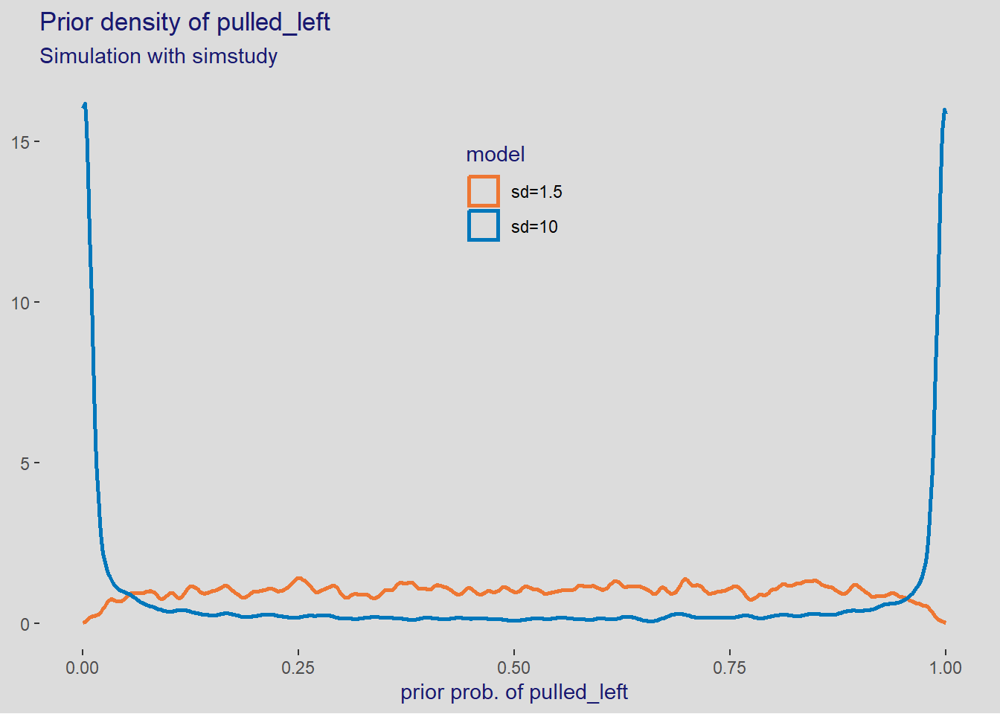
11.1.1.2 Prior for \(\beta_{treatment[i]}\)
Now we find the sd value for the prior \(\beta_k \sim \mathcal{N}(0, sd)\). Note that Solomon Kurtz in Kurz (2020) uses inv_logit_scaled() whereas mcElreath in McElreath (2020) uses inv_logit().
Important: In practice we could use the same prior as for \(\alpha\) just above. In this case however we combine the impact of \(\alpha\) and \(\beta\) to illustrate the weirdness of flat priors. Comment from MacElreath at the end of p. 328.
\[ \begin{align*} pulled\_left_i &\sim \mathcal{Binomial}(1, p_i) \\ logit(p_i) &= \alpha + \beta_{treatment[i]} \\ \alpha &\sim \mathcal{N}(0, 1.5) \\ \beta_k &\sim \mathcal{N}(0, sd) \\ &\text{sd to be determined} \end{align*} \]
We get the fit with \(sd = 10\)
# use get_prior() to get a sense of what the prior might be
get_prior(formula = pulled_left | trials(1) ~ 1 + treatment, data = dataChimp,
family = binomial) prior class coef group resp dpar nlpar lb ub
(flat) b
(flat) b treatmentAL
(flat) b treatmentPL
(flat) b treatmentPR
student_t(3, 0, 2.5) Intercept
source
default
(vectorized)
(vectorized)
(vectorized)
defaulttictoc::tic(msg = sprintf("run time of %s, use the cache.", "70 secs."))
fit11_02 <- xfun::cache_rds({
out <- brm(data = dataChimp,
family = bernoulli,
formula = bf(pulled_left ~ (1 | treatment)),
prior = c(
prior(normal(0, 1.5), class = Intercept),
prior(normal(0, 1.5), class = sd, coef = Intercept, group = treatment),
prior(normal(0, 10), class = sd, group = treatment)),
sample_prior = TRUE,
iter = 2000, warmup = 1000, chains = 4,
cores = detectCores(), seed = 1109)
out <- brms::add_criterion(out, criterion = c("waic", "loo"))
}, file = "ch11_fit11_02", rerun = FALSE)
tictoc::toc()run time of 70 secs., use the cache.: 0.16 sec elapsedand the coefficients, converted back to natural scale are
gtools::inv.logit(fixef(fit11_02)) |>
round(digits = 3) Estimate Est.Error Q2.5 Q97.5
Intercept 0.583 0.579 0.425 0.764posterior_summary(fit11_02) |>
gtools::inv.logit() |>
round(digits = 3) Estimate Est.Error Q2.5 Q97.5
b_Intercept 0.583 0.579 0.425 0.764
sd_treatment__Intercept 0.636 0.621 0.520 0.908
r_treatment[AR,Intercept] 0.471 0.586 0.270 0.624
r_treatment[AL,Intercept] 0.560 0.585 0.378 0.728
r_treatment[PR,Intercept] 0.416 0.587 0.218 0.563
r_treatment[PL,Intercept] 0.542 0.583 0.368 0.703
prior_Intercept 0.504 0.815 0.053 0.947
prior_sd_treatment__Intercept 0.766 0.711 0.512 0.965
lprior 0.107 0.578 0.031 0.123
lp__ 0.000 0.916 0.000 0.000then the fit with \(sd = 0.5\)
tictoc::tic(msg = sprintf("run time of %s, use the cache.", "35 secs."))
fit11_03 <- xfun::cache_rds({
out <- update(fit11_02,
prior = c(
prior(normal(0, 1.5), class = Intercept),
prior(normal(0, 1.5), class = sd, coef = Intercept, group = treatment),
prior(normal(0, 0.5), class = sd, group = treatment)))
out <- brms::add_criterion(out, criterion = c("waic", "loo"))},
file = "ch11_fit11_03", rerun = FALSE)
tictoc::toc()run time of 35 secs., use the cache.: 0.38 sec elapsedthe coefficients, converted back to natural scale are
posterior_summary(fit11_03) |>
gtools::inv.logit() |>
round(digits = 3) Estimate Est.Error Q2.5 Q97.5
b_Intercept 0.576 0.565 0.434 0.701
sd_treatment__Intercept 0.616 0.576 0.523 0.781
r_treatment[AR,Intercept] 0.479 0.570 0.338 0.624
r_treatment[AL,Intercept] 0.568 0.574 0.437 0.717
r_treatment[PR,Intercept] 0.423 0.572 0.278 0.558
r_treatment[PL,Intercept] 0.548 0.572 0.412 0.702
prior_Intercept 0.493 0.818 0.046 0.949
prior_sd_treatment__Intercept 0.767 0.711 0.513 0.966
lprior 0.113 0.530 0.084 0.123
lp__ 0.000 0.912 0.000 0.00011.1.1.2.1 Prior for \(\beta\) with simstudy
We also simulate \(\beta\) with simpr which is more versatile and easier to code (personal opinion), e.g. no need to run the model with prior_draws(). To get the prior by factor, that is AR, AL, etc, we need to specify every coefficient in the priors of brmsfit.
set.seed(1109)
sim11_02 <- simpr::specify(
a = ~ rnorm(n = 1000, mean = 0, sd = 1.5),
b1 = ~ rnorm(n = 1000, mean = 0, sd = the_sd),
b2 = ~ rnorm(n = 1000, mean = 0, sd = the_sd),
b3 = ~ rnorm(n = 1000, mean = 0, sd = the_sd),
b4 = ~ rnorm(n = 1000, mean = 0, sd = the_sd),
p1 = ~ gtools::inv.logit(b1),
p2 = ~ gtools::inv.logit(b2),
p3 = ~ gtools::inv.logit(b3),
p4 = ~ gtools::inv.logit(b4),
diff = ~ abs(p1 - p2),
model = ~ paste("sd", the_sd, sep = "=")) |>
define(the_sd = c(10, 0.5)) |>
generate(1)
sim11_02 <- sim11_02$sim |>
bind_rows(.id = "id")
# sim11_02 |>
# glimpse()ggplot(sim11_02, aes(x = diff, color = model)) +
geom_density(size = 1, alpha = 3/4, adjust = 0.1) +
scale_color_paletteer_d("khroma::vibrant") +
theme(legend.position = "none") +
labs(title = "Prior diff between treatments",
subtitle = "Simulation with simstudy",
x = "prior diff between treatments", y = NULL)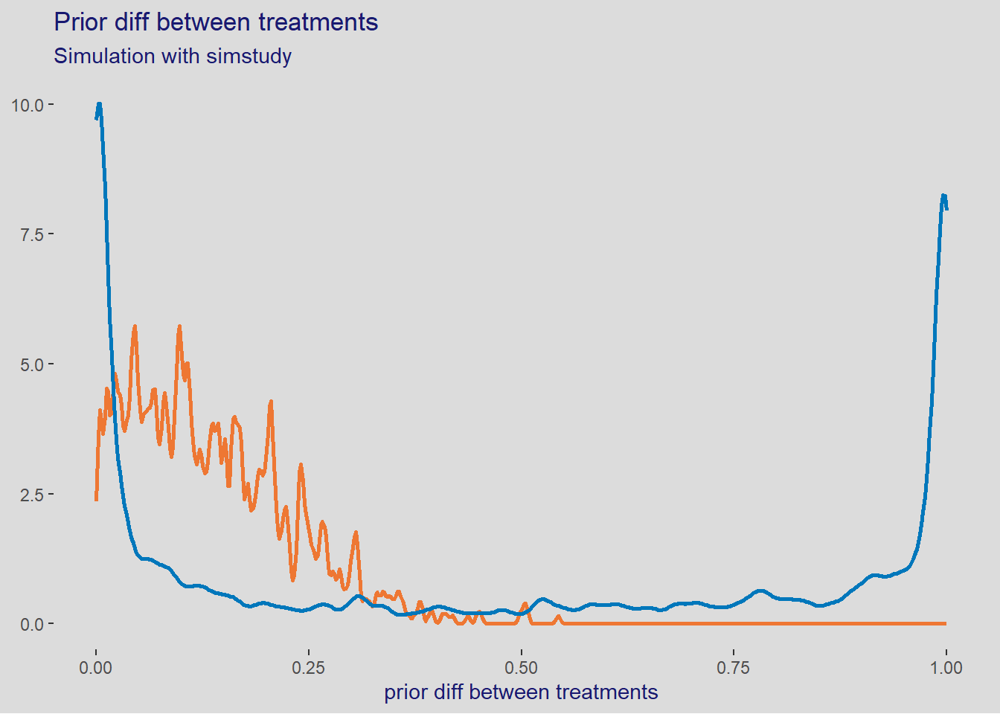
11.1.1.3 The full model
Now that we have investigated the prior, let’s do the full model with them
\[ \begin{align*} pulled\_left_i &\sim \mathcal{Binomial}(1, p_i) \\ logit(p_i) &= \alpha_{actor[i]} + \beta_{treatment[i]} \\ \alpha_j &\sim \mathcal{N}(0, 1.5) \\ \beta_k &\sim \mathcal{N}(0, 0.5) \end{align*} \]
We have to create a separate prior for every level in order to get them in separate columns for the analysis later. Normally we would simply use prior(normal(0, 0.5), class = b) without specifying the coefficient.
We use get_prior() to help us figure out the priors.
get_prior(data = dataChimp,
formula = bf(pulled_left ~ 0 + (1 | actor) + (1 | treatment)),
family = bernoulli) prior class coef group resp dpar nlpar lb ub
student_t(3, 0, 2.5) sd 0
student_t(3, 0, 2.5) sd actor 0
student_t(3, 0, 2.5) sd Intercept actor 0
student_t(3, 0, 2.5) sd treatment 0
student_t(3, 0, 2.5) sd Intercept treatment 0
source
default
(vectorized)
(vectorized)
(vectorized)
(vectorized)tictoc::tic(msg = sprintf("run time of %s, use the cache.", "80 secs."))
fit11_04 <- xfun::cache_rds({
out <- brm(data = dataChimp,
family = bernoulli,
formula = bf(pulled_left ~ 0 + (1 | actor) + (1 | treatment)),
prior = c(
prior(normal(0, 0.5), class = sd, coef = Intercept, group = actor),
prior(normal(0, 1.5), class = sd, group = actor),
prior(normal(0, 0.5), class = sd, coef = Intercept, group = treatment),
prior(normal(0, 0.5), class = sd, group = treatment)),
iter = 2000, warmup = 1000, chains = 4,
cores = detectCores(), seed = 1117)
out <- brms::add_criterion(out, criterion = c("waic", "loo"))},
file = "ch11_fit11_04", rerun = FALSE)
tictoc::toc()run time of 80 secs., use the cache.: 0.21 sec elapsedand the coefficients on natural scale
posterior_summary(fit11_04) |>
gtools::inv.logit() |>
round(digits = 4) Estimate Est.Error Q2.5 Q97.5
sd_actor__Intercept 0.7760 0.5593 0.6961 0.8522
sd_treatment__Intercept 0.6109 0.5519 0.5320 0.7192
r_actor[1,Intercept] 0.3873 0.5804 0.2424 0.5365
r_actor[2,Intercept] 0.9702 0.6777 0.8999 0.9942
r_actor[3,Intercept] 0.3191 0.5795 0.1938 0.4613
r_actor[4,Intercept] 0.3200 0.5827 0.1885 0.4657
r_actor[5,Intercept] 0.3860 0.5792 0.2494 0.5347
r_actor[6,Intercept] 0.6108 0.5797 0.4537 0.7449
r_actor[7,Intercept] 0.8670 0.6037 0.7430 0.9393
r_treatment[AR,Intercept] 0.4998 0.5659 0.3751 0.6332
r_treatment[AL,Intercept] 0.6124 0.5752 0.4889 0.7534
r_treatment[PR,Intercept] 0.4247 0.5679 0.2990 0.5554
r_treatment[PL,Intercept] 0.5889 0.5728 0.4665 0.7299
lprior 0.0596 0.7881 0.0029 0.3102
lp__ 0.0000 0.9530 0.0000 0.0000and to obtain the estimates on the logit scale
and we build of summary with the estimates on the natural scale
post11_04 <- list()
post11_04 <- within(post11_04, {
actor <- fit11_04 |>
spread_rvars(sd_actor__Intercept, r_actor[actor, term]) |>
mutate(estimate = inv_logit_scaled(r_actor)) |>
mean_qi(r_actor, estimate)
treatment <- fit11_04 |>
spread_rvars(sd_treatment__Intercept, r_treatment[treatment, term]) |>
mutate(estimate = inv_logit_scaled(r_treatment)) |>
mean_qi(r_treatment, estimate)
diff <- fit11_04 |>
tidy_draws(r_treatment[treatment, ]) |>
select(matches("r_treatment")) |>
rename(AR = `r_treatment[AR,Intercept]`,
AL = `r_treatment[AL,Intercept]`,
PR = `r_treatment[PR,Intercept]`,
PL = `r_treatment[PL,Intercept]`) |>
transmute(
ARvsPR_logit = AR - PR,
ARvsPR = inv_logit_scaled(ARvsPR_logit),
ALvsPL_logit = AL - PL,
ALvsPL = inv_logit_scaled(ALvsPL_logit)) |>
pivot_longer(cols = matches("ARvsPR|ALvsPL"),
names_to = "treatment",
values_to = "estimate") |>
group_by(treatment) |>
mean_qi(estimate)
})
# glimpse(post11_04$diff)plot11_04 <- list()
plot11_04 <- within(plot11_04, {
actor <- ggplot(post11_04$actor,
aes(x = estimate, xmin = estimate.lower, xmax = estimate.upper, y = actor)) +
geom_pointinterval(color = "darkgreen", size = 2, fatten_point = 3) +
geom_vline(xintercept = 0, color = "brown") +
ggrepel::geom_text_repel(mapping = aes(label = round(estimate, 2))) +
scale_y_continuous(breaks = scales::breaks_width(width = 1)) +
theme(panel.grid.major.y = element_line(color = "white")) +
labs(title = "Estimates for actors with 95% CI",
subtitle = "Model b11.4",
x = "probability (outcome scale)", y = "actor")
treatment <- ggplot(post11_04$treatment,
aes(x = estimate, xmin = estimate.lower, xmax = estimate.upper, y = treatment)) +
geom_pointinterval(color = "tomato", size = 2, fatten_point = 3) +
geom_vline(xintercept = 0, color = "brown") +
ggrepel::geom_text_repel(mapping = aes(label = round(estimate, 2))) +
theme(panel.grid.major.y = element_line(color = "white")) +
labs(title = "Estimates for treatments with 95% CI (McElreath is on logit scale)",
subtitle = "Model b11.4",
x = "probability (outcome scale)", y = "treatment")
treatment_logit <- ggplot(post11_04$treatment,
aes(x = r_treatment, xmin = r_treatment.lower, xmax = r_treatment.upper, y = treatment)) +
geom_pointinterval(color = "tomato", size = 2, fatten_point = 3) +
geom_vline(xintercept = 0, color = "brown") +
ggrepel::geom_text_repel(mapping = aes(label = round(r_treatment, 2))) +
theme(panel.grid.major.y = element_line(color = "white")) +
labs(title = "Estimates for treatments with 95% CI (McElreath is on logit scale)",
subtitle = "Model b11.4",
x = "logit scale", y = "treatment")
diff_logit <- post11_04$diff |>
filter(treatment %in% c("ALvsPL_logit", "ARvsPR_logit")) |>
ggplot(aes(x = estimate, xmin = .lower, xmax = .upper, y = treatment)) +
geom_pointinterval(color = "mediumpurple", size = 2, fatten_point = 3) +
geom_vline(xintercept = 0, color = "brown") +
ggrepel::geom_text_repel(mapping = aes(label = round(estimate, 2))) +
theme(panel.grid.major.y = element_line(color = "white")) +
labs(title = "Effect treatments with 95% CI (McElreath is on logit scale)",
subtitle = "Model b11.4",
x = "logit scale", y = "treatment")
diff <- post11_04$diff |>
filter(treatment %in% c("ALvsPL", "ARvsPR")) |>
ggplot(aes(x = estimate, xmin = .lower, xmax = .upper, y = treatment)) +
geom_pointinterval(color = "mediumpurple", size = 2, fatten_point = 3) +
geom_vline(xintercept = 0, color = "brown") +
ggrepel::geom_text_repel(mapping = aes(label = round(estimate, 2))) +
theme(panel.grid.major.y = element_line(color = "white")) +
labs(title = "Effect treatments with 95% CI",
subtitle = "Model b11.4",
x = "probability difference (outcome scale)", y = "treatment")
})The plot for the actors is
plot11_04$actor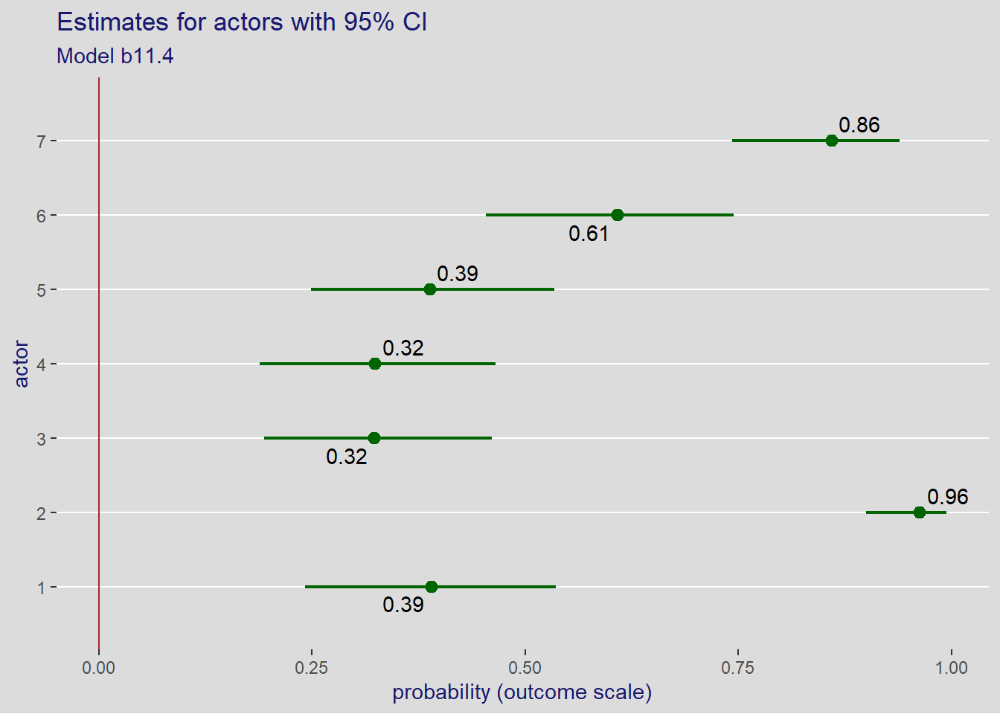
and for the treatments. This is different because McElreath gives the plot on the logit scale
wrap_plots(plot11_04[c("treatment_logit", "treatment")], ncol = 1)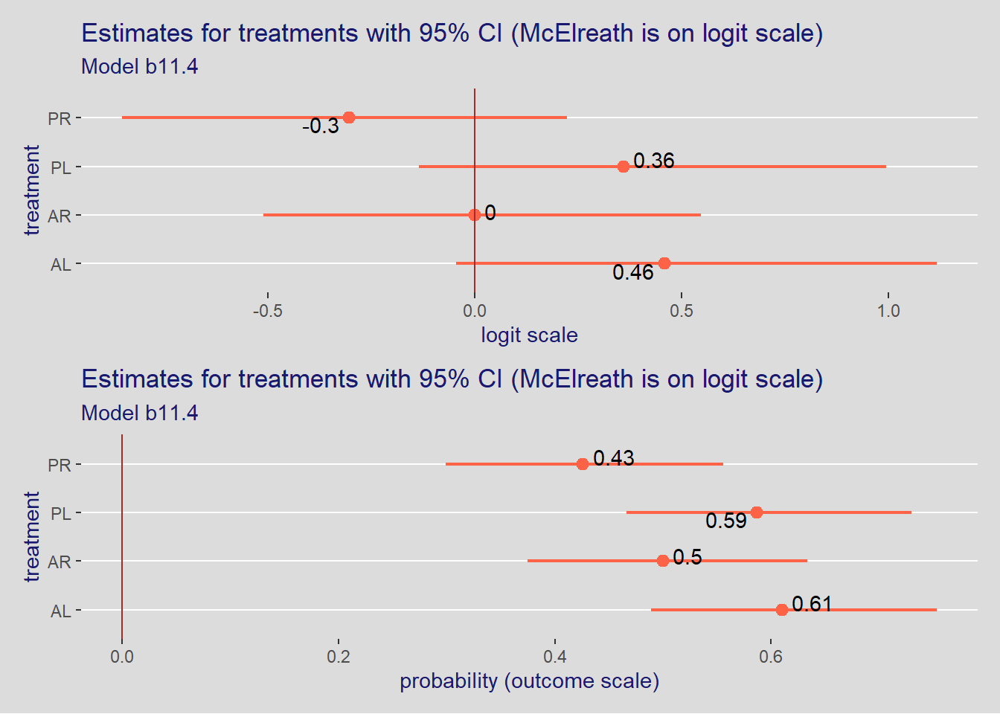
Note
The plot above is different because McElreath gives the plot for the treatment on the logit scale. Why not using the outcome scale as for actors?
to compare the models
wrap_plots(plot11_04[c("diff", "diff_logit")], ncol = 1)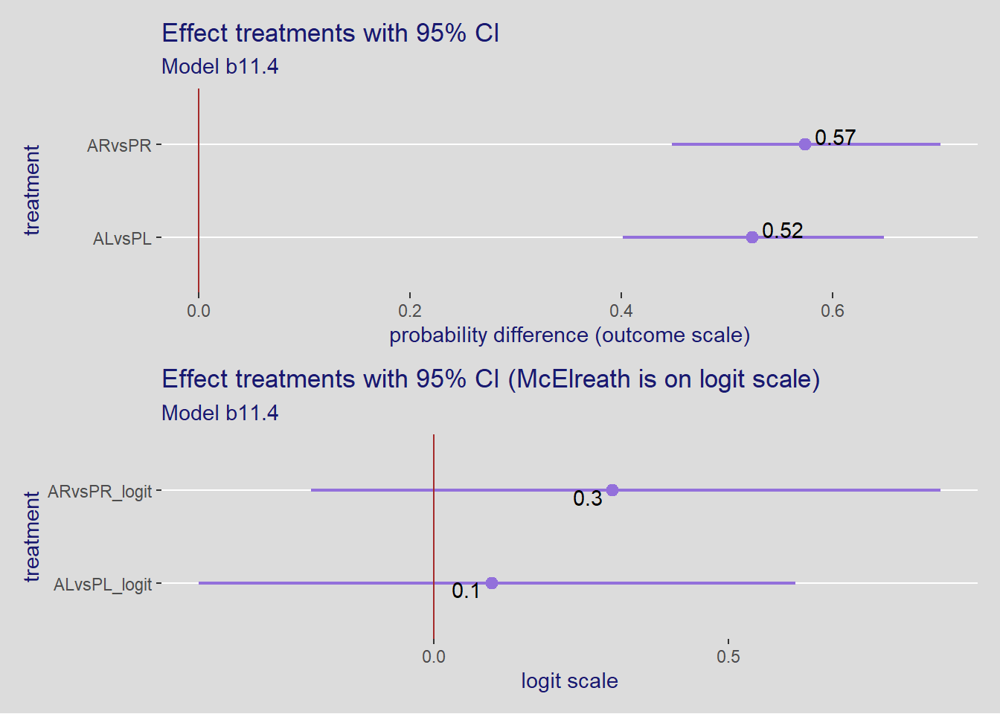
Next we look at the observed and predicted effect by actor
plot11_04all <- list()
plot11_04all <- within(plot11_04all, {
dataObserved <- dataChimp |>
group_by(actor, condition, prosoc_left) |>
summarize(pulled_left = mean(pulled_left)) |>
# create the factors
mutate(actor_id = paste("actor", actor),
condition = condition + 1,
condition = factor(condition, levels = 1:2, labels = c("alone", "partner")),
prosoc_left = prosoc_left + 1,
prosoc_left = factor(prosoc_left, levels = 1:2, labels = c("right", "left")))
plotObserved <- ggplot(dataObserved,
aes(x = condition, y = pulled_left,
group = prosoc_left, color = prosoc_left,
fill = prosoc_left)) +
geom_line(size = 1) +
geom_point() +
geom_hline(yintercept = 0.5, color = "brown", linetype = 2) +
ggrepel::geom_text_repel(aes(label = round(pulled_left, 2)), size = 3) +
scale_y_continuous(labels = scales::label_percent()) +
coord_cartesian(ylim = c(0, 1)) +
theme(legend.position = "bottom") +
labs(title = "Observed proportions",
x = NULL, y = "proportion pulled left") +
facet_grid(. ~ actor_id)
})`summarise()` has grouped output by 'actor', 'condition'. You can override
using the `.groups` argument.# glimpse(plot11_04all$dataObserved)
plot11_04all$plotObserved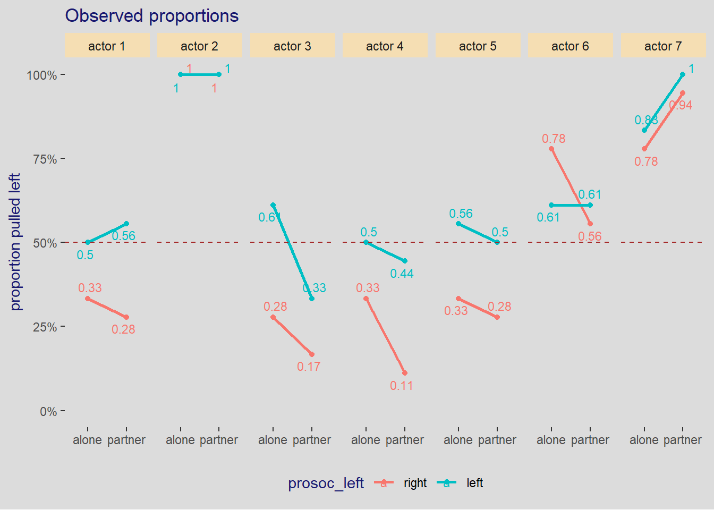
plot11_04all <- within(plot11_04all, {
dataEPredicted <- expand_grid(actor = unique(dataChimp$actor),
treatment = unique(dataChimp$treatment)) |>
# dataPredicted <- dataChimp |>
add_epred_rvars(fit11_04) |>
mutate(actor_id = paste("actor", actor),
condition = if_else(substring(treatment, 1, 1) == "A", "alone", "partner"),
condition = as.factor(condition),
prosoc_left = if_else(substring(treatment, 2, 2) == "R", "right", "left"),
prosoc_left = as.factor(prosoc_left)) |>
select(-treatment) |>
group_by(actor, condition, prosoc_left) |>
mean_qi(.epred, .width = 0.89) |>
identity()
plotEPredicted <- ggplot(dataEPredicted,
aes(x = condition, y = .epred,
group = prosoc_left, color = prosoc_left,
fill = prosoc_left)) +
geom_line(size = 1) +
geom_point() +
geom_errorbar(aes(ymin = .lower, ymax = .upper), width = 1/3) +
geom_hline(yintercept = 0.5, color = "brown", linetype = 2) +
ggrepel::geom_text_repel(aes(label = round(.epred, 2)), size = 3) +
scale_y_continuous(labels = scales::label_percent()) +
coord_cartesian(ylim = c(0, 1)) +
theme(legend.position = "bottom") +
labs(title = "Posterior expected predictions with 89% CI",
x = NULL, y = "proportion pulled left") +
facet_grid(. ~ actor_id)
})
# glimpse(plot11_04all$dataEPredicted)
plot11_04all$plotEPredictedand if we compare the models
loo_compare(fit11_02, fit11_03, fit11_04, criterion = "waic") |>
round(digits = 1) |>
print(simplify = FALSE) elpd_diff se_diff elpd_waic se_elpd_waic p_waic se_p_waic waic
fit11_04 0.0 0.0 -267.2 9.2 8.5 0.4 534.5
fit11_03 -74.3 9.0 -341.5 4.3 3.7 0.1 683.1
fit11_02 -74.4 9.0 -341.6 4.4 3.8 0.1 683.2
se_waic
fit11_04 18.4
fit11_03 8.7
fit11_02 8.7 we can see that \(actor\) and \(treatment\) considered alone give about the same quality of fit. The better fit is when both of them are taken into account together.
11.1.2 Relative shark and absolute deer
It is more common to see logistic regression as relative effects. relative effect are proportional change in the odds of the outcome
fit11_04 |>
spread_rvars(r_treatment[treatment, ]) |>
pivot_wider(names_from = treatment, values_from = r_treatment) |>
mutate(
ARvsPR = exp(PR - AR),
ALvsPL = exp(PL - AL)) |>
mean_qi(.width = 0.89) |>
pull(ALvsPL) |>
identity()[1] 0.9371068On average the switch from treatment AL, pulling the left lever without a partner, to treatment PL, pulling the left lever with a partner, reduces the odds by 6%. The difference with McElreath is cause by the ransom sampling.
The risk of focusing on relative effects, such as proportional odds, is that they aren’t enough to tell enough whether a variable is important or not.
See the overthinking box in section 11.1.2, p. 337.
11.1.3 Aggregated binomial: Chimpanzees again
dataChimp_agg <- dataChimp |>
group_by(treatment, actor, prosoc_left, condition) |>
summarise(left_pulls = sum(pulled_left)) |>
ungroup()`summarise()` has grouped output by 'treatment', 'actor', 'prosoc_left'. You
can override using the `.groups` argument.# dataChimp_aggtictoc::tic(msg = sprintf("run time of %s, use the cache.", "70 secs."))
fit11_06 <- xfun::cache_rds({
out <- brms::brm(
data = dataChimp_agg,
family = binomial,
formula = bf(left_pulls | trials(18) ~ 0 + (1 | actor) + (1 | treatment)),
prior = c(prior(normal(0, 0.5), class = sd, coef = Intercept, group = actor),
prior(normal(0, 1.5), class = sd, group = actor),
prior(normal(0, 0.5), class = sd, coef = Intercept, group = treatment),
prior(normal(0, 0.5), class = sd, group = treatment)),
cores = detectCores(), seed = 1123)
out <- brms::add_criterion(out, criterion = c("waic", "loo"))},
file = "ch11_fit11_06", rerun = FALSE)
tictoc::toc()run time of 70 secs., use the cache.: 0.17 sec elapsedposterior_summary(fit11_06) |>
round(digits = 3) Estimate Est.Error Q2.5 Q97.5
sd_actor__Intercept 1.257 0.234 0.859 1.770
sd_treatment__Intercept 0.469 0.212 0.144 0.969
r_actor[1,Intercept] -0.461 0.327 -1.149 0.140
r_actor[2,Intercept] 3.516 0.753 2.243 5.156
r_actor[3,Intercept] -0.751 0.333 -1.459 -0.146
r_actor[4,Intercept] -0.747 0.328 -1.456 -0.156
r_actor[5,Intercept] -0.454 0.321 -1.105 0.171
r_actor[6,Intercept] 0.446 0.327 -0.211 1.065
r_actor[7,Intercept] 1.865 0.404 1.096 2.699
r_treatment[AR,Intercept] -0.009 0.270 -0.517 0.572
r_treatment[AL,Intercept] 0.459 0.305 -0.051 1.139
r_treatment[PR,Intercept] -0.305 0.268 -0.835 0.228
r_treatment[PL,Intercept] 0.359 0.290 -0.154 0.998
lprior -2.864 1.342 -6.027 -0.846
lp__ -74.479 3.078 -81.341 -69.69511.1.4 Aggregated binomial: Graduate school admissions
In the chimpanzees example, the number of trials was fixed at 18. This is often not the case.
data(UCBadmit)
dataAdmit <- UCBadmit |>
rename(gender = applicant.gender) |>
mutate(case = factor(seq_len(n())),
admit_pct = admit / applications,
reject_pct = reject / applications)
rm(UCBadmit)
skim(dataAdmit) |>
select(-n_missing, -complete_rate) |>
mutate(across(.cols = where(is.numeric), .fns = round, digits = 1))| Name | dataAdmit |
| Number of rows | 12 |
| Number of columns | 8 |
| _______________________ | |
| Column type frequency: | |
| factor | 3 |
| numeric | 5 |
| ________________________ | |
| Group variables | None |
Variable type: factor
| skim_variable | ordered | n_unique | top_counts |
|---|---|---|---|
| dept | FALSE | 6 | A: 2, B: 2, C: 2, D: 2 |
| gender | FALSE | 2 | fem: 6, mal: 6 |
| case | FALSE | 12 | 1: 1, 2: 1, 3: 1, 4: 1 |
Variable type: numeric
| skim_variable | mean | sd | p0 | p25 | p50 | p75 | p100 | hist |
|---|---|---|---|---|---|---|---|---|
| admit | 146.2 | 148.4 | 17.0 | 45.8 | 107.0 | 154.0 | 512.0 | ▇▅▁▁▁ |
| reject | 230.9 | 122.8 | 8.0 | 188.2 | 261.5 | 314.0 | 391.0 | ▃▂▃▇▆ |
| applications | 377.2 | 216.9 | 25.0 | 291.5 | 374.0 | 452.8 | 825.0 | ▃▆▇▃▂ |
| admit_pct | 0.4 | 0.2 | 0.1 | 0.3 | 0.3 | 0.6 | 0.8 | ▃▇▂▃▃ |
| reject_pct | 0.6 | 0.2 | 0.2 | 0.4 | 0.7 | 0.7 | 0.9 | ▃▃▂▇▃ |
the univariate model is
\[ \begin{align*} admit_i &\sim \mathcal{Binomial}(n_i, p_i) \\ logit(p_i) &= \alpha_{gid[i]} \\ \alpha_j &\sim \mathcal{N}(0, 1.5) \end{align*} \]
and we fit the model, first we look at the default prior,
get_prior(data = dataAdmit,
formula = bf(admit | trials(applications) ~ 0 + (1|gender)),
family = binomial) prior class coef group resp dpar nlpar lb ub source
student_t(3, 0, 2.5) sd 0 default
student_t(3, 0, 2.5) sd gender 0 (vectorized)
student_t(3, 0, 2.5) sd Intercept gender 0 (vectorized)then do the fit
tictoc::tic(msg = sprintf("run time of %s, use the cache.", "60 secs."))
fit11_07 <- xfun::cache_rds({
out <- brm(data = dataAdmit,
family = binomial,
formula = bf(admit | trials(applications) ~ 0 + (1|gender)),
prior(normal(0, 1.5), class = sd),
iter = 2000, warmup = 1000, chains = 4,
cores = detectCores(), seed = 1129)
out <- brms::add_criterion(out, criterion = c("waic", "loo"))},
file = "ch11_fit11_07")
tictoc::toc()run time of 60 secs., use the cache.: 0.22 sec elapsedposterior_summary(fit11_07) |>
round(digits = 3) Estimate Est.Error Q2.5 Q97.5
sd_gender__Intercept 0.993 0.543 0.343 2.384
r_gender[female,Intercept] -0.828 0.051 -0.930 -0.731
r_gender[male,Intercept] -0.219 0.039 -0.293 -0.143
lprior -0.916 0.316 -1.894 -0.657
lp__ -431.008 1.523 -434.748 -429.117and we compute the contrast between male and female
fit11_07 |>
spread_rvars(r_gender[gender, ]) |>
pivot_wider(names_from = gender, values_from = r_gender) |>
transmute(diff_a = male - female,
diff_p = inv_logit_scaled(male) - inv_logit_scaled(female)) |>
pivot_longer(cols = everything(), names_to = "var", values_to = "value") |>
mean_qi(value, .width = 0.89) |>
mutate(across(.cols = where(is.numeric), .fns = round, digits = 2))# A tibble: 2 × 7
var value .lower .upper .width .point .interval
<chr> <dbl> <dbl> <dbl> <dbl> <chr> <chr>
1 diff_a 0.61 0.51 0.71 0.89 mean qi
2 diff_p 0.14 0.12 0.16 0.89 mean qi we firs get the posterior expected fit
epred11_07 <- dataAdmit |>
add_epred_rvars(fit11_07) |>
mutate(.epred_pct = .epred / applications) |>
select(dept, case, .epred_pct) |>
group_by(dept, case) |>
mean_qi(.epred_pct)
# glimpse(pred11_07)and the posterior validation check for model fit11_07 is
plot11_07 <- list()
plot11_07 <- within(plot11_07, {
data <- dataAdmit |>
mutate(label = sprintf("%s=%0.2f", substr(as.character(gender), 1, 1), admit_pct)) |>
group_by(case, dept, label) |>
summarize(admit_pct = mean(admit_pct))
p <- ggplot(data, aes(x = case, y = admit_pct, color = dept, fill = dept)) +
geom_line(aes(group = dept)) +
geom_point() +
geom_hline(yintercept = 0.5, color = "brown", linetype = 2) +
ggrepel::geom_text_repel(aes(label = label), size = 3) +
scale_y_continuous(labels = scales::label_percent()) +
scale_color_paletteer_d("ggthemes::Classic_10") +
scale_fill_paletteer_d("ggthemes::Classic_10") +
coord_cartesian(ylim = c(0, 1)) +
theme(legend.position = c(0.8, 0.8),
legend.direction = "horizontal",
legend.text = element_text(size = rel(0.8))) +
labs(title = "Posterior validation check", x = NULL)
p <- p +
geom_point(data = epred11_07, aes(x = case, y = .epred_pct, group = dept),
shape = 1, color = "darkblue") +
geom_errorbar(data = epred11_07,
aes(x = case, y = .epred_pct, ymin = .lower, ymax = .upper, group = dept),
color = "darkblue", width = 1/4)
})`summarise()` has grouped output by 'case', 'dept'. You can override using the
`.groups` argument.# plot11_07$data
plot11_07$pand the full model is
\[ \begin{align*} admit_i &\sim \mathcal{Binomial}(n_i, p_i) \\ logit(p_i) &= \alpha_{gid[i]} + \delta_{dept[i]} \\ \alpha_j &\sim \mathcal{N}(0, 1.5) \\ \delta_k &\sim \mathcal{N}(0, 1.5) \end{align*} \]
and we fit the model
tictoc::tic(msg = sprintf("run time of %s, use the cache.", "80 secs."))
fit11_08 <- xfun::cache_rds({
out <- brm(data = dataAdmit,
family = binomial,
formula = admit | trials(applications) ~ 0 + (1|gender) + (1|dept),
prior(normal(0, 1.5), class = sd),
iter = 2000, warmup = 1000, chains = 4,
cores = detectCores(), seed = 1151)
out <- brms::add_criterion(out, criterion = c("waic", "loo"))},
file = "ch11_fit11_08")
tictoc::toc()run time of 80 secs., use the cache.: 0.22 sec elapsedposterior_summary(fit11_08) |>
round(digits = 2) Estimate Est.Error Q2.5 Q97.5
sd_dept__Intercept 1.39 0.42 0.79 2.44
sd_gender__Intercept 0.40 0.46 0.01 1.66
r_dept[A,Intercept] 0.73 0.25 0.35 1.38
r_dept[B,Intercept] 0.68 0.25 0.28 1.34
r_dept[C,Intercept] -0.52 0.24 -0.90 0.09
r_dept[D,Intercept] -0.56 0.24 -0.95 0.06
r_dept[E,Intercept] -0.99 0.25 -1.40 -0.35
r_dept[F,Intercept] -2.55 0.28 -3.03 -1.88
r_gender[female,Intercept] -0.07 0.23 -0.70 0.33
r_gender[male,Intercept] -0.15 0.24 -0.80 0.22
lprior -1.81 0.38 -2.95 -1.43
lp__ -62.23 3.04 -68.91 -57.32with the posterior distributions
# post11_08 <- expand.grid(
# gender = dataAdmit$gender,
# dept = dataAdmit$dept) |>
post11_08 <- spread_rvars(fit11_08, r_gender[gender, ])
post11_08# A tibble: 2 × 2
gender r_gender[,1]
<chr> <rvar[,1]>
1 female -0.065 ± 0.23
2 male -0.146 ± 0.24and again we compute the contrast between male and female
fit11_08 |>
spread_rvars(r_gender[gender, ]) |>
pivot_wider(names_from = gender, values_from = r_gender) |>
transmute(diff_a = male - female,
diff_p = inv_logit_scaled(male) - inv_logit_scaled(female)) |>
pivot_longer(cols = everything(), names_to = "var", values_to = "value") |>
mean_qi(value, .width = 0.89) |>
mutate(across(.cols = where(is.numeric), .fns = round, digits = 2))# A tibble: 2 × 7
var value .lower .upper .width .point .interval
<chr> <dbl> <dbl> <dbl> <dbl> <chr> <chr>
1 diff_a -0.08 -0.21 0.03 0.89 mean qi
2 diff_p -0.02 -0.05 0.01 0.89 mean qi and again the results are very close to McElreath’s.
This leads us to hypotheses that the department is a confound and we could have the following DAG
ggdag::dagify(A ~ D + G, D ~ G) |>
ggdag::ggdag_classic(layout = "sugiyama") +
ggdag::theme_dag_blank(
panel.background = element_rect(fill = "snow2", color = "snow2"))11.2 Poisson regression
\[ \begin{align*} y_i &\sim \mathcal{Poisson}(\lambda_i) \\ \log{\lambda_i} &= \alpha + \beta (x_i - \bar{x}) \end{align*} \]
11.2.1 Example: Oceanic tool complexity
data(Kline)
dataKline <- Kline |>
mutate(log_pop = log(population),
log_pop_s = scale(log_pop),
cid = factor(contact, levels = c("low", "high")))
rm(Kline)
dataKline |>
skim() |>
select(-n_missing, -complete_rate) |>
mutate(across(.cols = where(is.numeric), .fns = round, digits = 2))| Name | dataKline |
| Number of rows | 10 |
| Number of columns | 8 |
| _______________________ | |
| Column type frequency: | |
| factor | 3 |
| numeric | 5 |
| ________________________ | |
| Group variables | None |
Variable type: factor
| skim_variable | ordered | n_unique | top_counts |
|---|---|---|---|
| culture | FALSE | 10 | Chu: 1, Haw: 1, Lau: 1, Mal: 1 |
| contact | FALSE | 2 | hig: 5, low: 5 |
| cid | FALSE | 2 | low: 5, hig: 5 |
Variable type: numeric
| skim_variable | mean | sd | p0 | p25 | p50 | p75 | p100 | hist |
|---|---|---|---|---|---|---|---|---|
| population | 34109.10 | 84793.03 | 1100.00 | 3897.75 | 7700.00 | 12050.00 | 275000.00 | ▇▁▁▁▁ |
| total_tools | 34.80 | 17.85 | 13.00 | 22.50 | 30.50 | 42.25 | 71.00 | ▇▃▃▂▂ |
| mean_TU | 4.83 | 1.14 | 3.20 | 4.00 | 4.85 | 5.30 | 6.60 | ▅▅▇▂▅ |
| log_pop | 8.98 | 1.53 | 7.00 | 8.26 | 8.95 | 9.39 | 12.52 | ▃▇▃▁▂ |
| log_pop_s | 0.00 | 1.00 | -1.29 | -0.47 | -0.02 | 0.27 | 2.32 | ▃▇▃▁▂ |
the model is
\[ total\_tools_i \sim \mathcal{Poisson}(\lambda_i) \\ \log{\lambda_i} = \alpha_{cid[i]} + \beta_{cid[i]} \log{log\_pop\_s_i} \\ \alpha_j \sim \mathcal{N}(0, ?) \\ \beta_k \sim \mathcal{N}(0, ?) \]
11.2.1.1 Calibrating the priors
Source: https://ggplot2.tidyverse.org/reference/geom_function.html
For the intercept \(\alpha_j\). If \(\alpha_j\) is normal then we know that \(\lambda_j\) is lognormal distributed.
11.2.1.1.1 With simpr
set.seed(1153)
simKline1 <- simpr::specify(
a = ~ rnorm(n = 100, mean = the_mean, the_sd),
lambda = ~ exp(a),
m = ~ paste("mu ==", the_mean),
s = ~ paste("sigma ==", the_sd)) |>
define(the_mean = c(0, 2, 3), the_sd = c(0.5, 1, 2)) |>
generate(1)
simKline1 <- simKline1$sim |>
bind_rows(.id = "id")
# simKline1 |>
# glimpse()ggplot(simKline1, aes(x = lambda, fill = as.factor(m), color = as.factor(m))) +
geom_density(aes(y = after_stat(scaled))) +
scale_fill_paletteer_d("khroma::vibrant") +
scale_color_paletteer_d("khroma::vibrant") +
coord_cartesian(xlim = c(0, 100)) +
theme(legend.position = "none",
axis.text.y = element_blank(),
axis.ticks.y = element_blank()) +
labs(title = "Prior predictive distribution of the mean (lambda)",
x = NULL, y = NULL) +
facet_grid(s ~ m, labeller = label_parsed)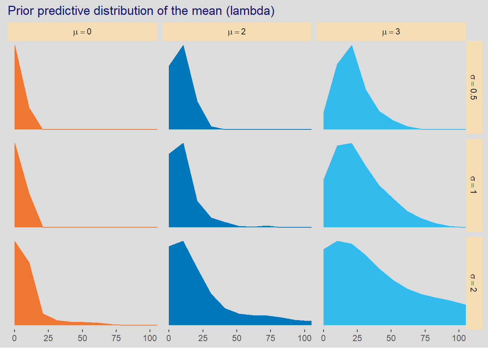
11.2.1.1.2 as per textbook
plotKline1 <- list()
plotKline1 <- within(plotKline1, {
df <- crossing("meanlog" = c(0, 2, 3), "sdlog" = c(0.5, 1, 2)) |>
expand(nesting(meanlog, sdlog), x = seq(from = 0, to = 100, length.out = 50)) |>
mutate(density = dlnorm(x, meanlog = meanlog, sdlog = sdlog),
meanid = factor(paste("meanlog =", meanlog)),
sdid = factor(paste("sdlog =", sdlog))) |>
arrange(meanlog, sdlog)
pplotKline1 <- ggplot(df, aes(x = x, y = density, fill = meanid)) +
geom_area() +
scale_y_continuous(breaks = NULL) +
scale_fill_paletteer_d("khroma::vibrant") +
coord_cartesian(xlim = c(0, 50)) +
theme(legend.position = "none",
axis.text.y = element_blank()) +
labs(title = "Prior predictive distribution of the mean (lambda)",
x = NULL, y = NULL) +
facet_grid(sdid ~ meanid, scales = "free_y")
})
plotKline1$pTherefore we choose \(\alpha_{cid[i]} \sim \mathcal{LogNormal(3, 0.5)}\) as our prior for \(\alpha_{cid[i]}\).
Using our prior for \(\alpha_{cid[i]}\) we simulate \(\beta_{cid[i]}\). We show the simulation on the natural scale as it is much easier to understand
11.2.1.1.3 slope with simpr
simKline2 <- list()
simKline2 <- within(simKline2, {
set.seed(1153)
sim1 <- simpr::specify(
a = ~ rnorm(n = 1, mean = 3, 0.5),
b = ~ rnorm(n = 1, mean = 0, sd = 0.2),
pop_log = ~ seq(from = -2, to = 2, by = 0.1),
tools = ~ exp(a + b * pop_log)) |>
generate(50) |>
identity()
pdf1 <- sim1 |>
unnest(sim) |>
identity()
})plotKline2 <- list()
plotKline2 <- within(plotKline2, {
p1 <- ggplot(simKline2$pdf1,
aes(x = pop_log, y = tools, group = rep, color = b)) +
geom_line() +
scale_color_paletteer_c("pals::ocean.speed") +
coord_cartesian(ylim = c(0, 100)) +
theme(legend.position = "none") +
labs(title = "Prior predictive distribution of the mean tools (lambda)",
subtitle = expression(
paste(a %~% N(mu == 3, sigma == 0.5), ", ", b %~% N(mu == 0, sigma == 0.2))),
x = "Standard log population", y = "mean total tools(lambda)")
})
# plotKline2$p1simKline2 <- within(simKline2, {
sim2 <- simpr::specify(
a = ~ rnorm(n = 1, mean = 3, 0.5),
b = ~ rnorm(n = 1, mean = 0, sd = 10),
pop_log = ~ seq(from = -2, to = 2, by = 0.1),
tools = ~ exp(a + b * pop_log)) |>
generate(50) |>
identity()
pdf2 <- sim2 |>
unnest(sim) |>
identity()
})plotKline2 <- within(plotKline2, {
p2 <- ggplot(simKline2$pdf2,
aes(x = pop_log, y = tools, group = rep, color = b)) +
geom_line() +
scale_color_paletteer_c("pals::ocean.haline") +
coord_cartesian(ylim = c(0, 100)) +
theme(legend.position = "none") +
labs(title = "Prior predictive distribution of the mean tools (lambda)",
subtitle = expression(paste(a %~% N(mu == 3, sigma == 0.5), ", ", b %~% N(mu == 0, sigma == 10))),
x = "Standard log population", y = "mean total tools(lambda)")
})
# plotKline2$p2simKline2 <- within(simKline2, {
sim3 <- simpr::specify(
a = ~ rnorm(n = 1, mean = 3, 0.5),
b = ~ rnorm(n = 1, mean = 0, sd = 0.2),
pop_log = ~ seq(from = log(100), to = log(2e5), length.out = 40),
tools = ~ exp(a + b * pop_log)) |>
generate(50) |>
identity()
pdf3 <- sim3 |>
unnest(sim) |>
identity()
})plotKline2 <- within(plotKline2, {
p3 <- ggplot(simKline2$pdf3,
aes(x = pop_log, y = tools, group = rep, color = b)) +
geom_line() +
scale_color_paletteer_c("pals::ocean.delta") +
coord_cartesian(ylim = c(0, 500)) +
theme(legend.position = "none") +
labs(title = "Prior predictive distribution of the mean tools (lambda)",
subtitle = expression(paste(a %~% N(mu == 3, sigma == 0.5), ", ", b %~% N(mu == 0, sigma == 0.2))),
x = "log population", y = "mean total tools (lambda)")
})
# plotKline2$p3simKline2 <- within(simKline2, {
sim4 <- simpr::specify(
a = ~ rnorm(n = 1, mean = 3, 0.5),
b = ~ rnorm(n = 1, mean = 0, sd = 0.2),
pop_log = ~ seq(from = log(100), to = log(2e5), length.out = 40),
pop = ~ exp(pop_log),
tools = ~ exp(a + b * pop_log)) |>
generate(50) |>
identity()
pdf4 <- sim4 |>
unnest(sim) |>
identity()
})plotKline2 <- within(plotKline2, {
p4 <- ggplot(simKline2$pdf4,
aes(x = pop, y = tools, group = rep, color = b)) +
geom_line() +
scale_color_paletteer_c("pals::ocean.thermal") +
coord_cartesian(ylim = c(0, 500)) +
theme(legend.position = "none") +
labs(title = "Prior predictive distribution of the mean tools (lambda)",
subtitle = expression(paste(a %~% N(mu == 3, sigma == 0.5), ", ", b %~% N(mu == 0, sigma == 0.2))),
x = "population", y = "mean total tools (lambda)")
})
# plotKline2$p4patchwork::wrap_plots(plotKline2[c("p1", "p2", "p3", "p4")])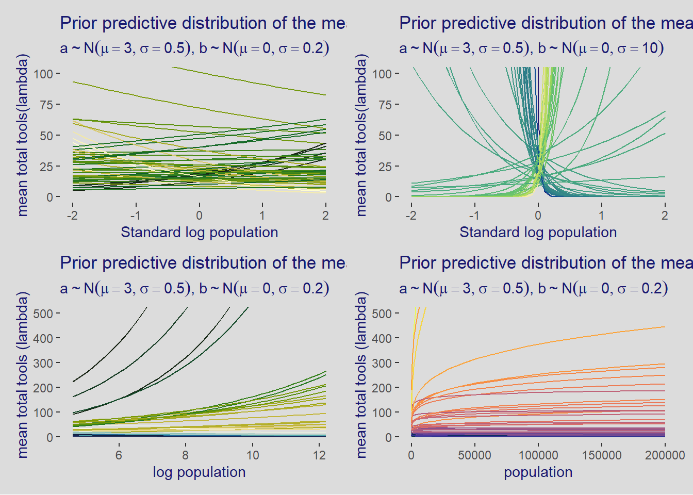
11.2.1.2 Model and fit
The model with the priors as explained just above is
\[ total\_tools_i \sim \mathcal{Poisson}(\lambda_i) \\ \log{\lambda_i} = \alpha_{cid[i]} + \beta_{cid[i]} \log{log\_pop\_s_i} \\ \alpha_j \sim \mathcal{N}(3, 0.5) \\ \beta_k \sim \mathcal{N}(0, 0.2) \]
The fit with intercept only
tictoc::tic(msg = sprintf("run time of %s, use the cache.", "60 secs."))
fit11_09 <- xfun::cache_rds({
out <- brm(data = dataKline,
family = poisson,
formula = total_tools ~ 1,
prior = c(prior(normal(3, 0.5), class = Intercept)),
iter = 1000, warmup = 500, chains = 2,
cores = detectCores(), seed = 1163)
out <- brms::add_criterion(out, criterion = c("waic", "loo"))},
file = "ch11_fit11_09")
tictoc::toc()run time of 60 secs., use the cache.: 0.22 sec elapsedposterior_summary(fit11_09) Estimate Est.Error Q2.5 Q97.5
b_Intercept 3.5385119 0.05264197 3.433214 3.6408872
lprior -0.8113182 0.11347312 -1.047264 -0.6011393
lp__ -67.0173429 0.66772263 -68.967360 -66.5318055and the model with the interaction between population and contact
get_prior(formula = bf(total_tools ~ 0 + (1 + log_pop_s | cid)),
data = dataKline, family = poisson) prior class coef group resp dpar nlpar lb ub source
lkj(1) cor default
lkj(1) cor cid (vectorized)
student_t(3, 0, 2.5) sd 0 default
student_t(3, 0, 2.5) sd cid 0 (vectorized)
student_t(3, 0, 2.5) sd Intercept cid 0 (vectorized)
student_t(3, 0, 2.5) sd log_pop_s cid 0 (vectorized)tictoc::tic(msg = sprintf("run time of %s, use the cache.", "80 secs."))
fit11_10 <- xfun::cache_rds({
out <- brm(data = dataKline,
family = poisson,
formula = bf(total_tools ~ 0 + (1 + log_pop_s | cid)),
prior = c(prior(normal(3, 0.5), class = sd, coef = Intercept, group = cid),
prior(normal(0, 0.2), class = sd, coef = log_pop_s, group = cid)),
iter = 1000, warmup = 500, chains = 2,
cores = detectCores(), seed = 1171)
out <- brms::add_criterion(out, criterion = c("waic", "loo"))},
file = "ch11_fit11_10")
tictoc::toc()run time of 80 secs., use the cache.: 0.26 sec elapsedposterior_summary(fit11_10) |>
round(digits = 3) Estimate Est.Error Q2.5 Q97.5
sd_cid__Intercept 2.964 0.463 2.058 3.920
sd_cid__log_pop_s 0.310 0.088 0.168 0.506
cor_cid__Intercept__log_pop_s 0.640 0.321 -0.204 0.992
r_cid[low,Intercept] 3.326 0.087 3.147 3.497
r_cid[high,Intercept] 3.614 0.070 3.480 3.741
r_cid[low,log_pop_s] 0.385 0.053 0.278 0.487
r_cid[high,log_pop_s] 0.350 0.170 0.026 0.703
lprior -1.262 0.936 -3.660 -0.021
lp__ -46.024 2.099 -50.731 -43.067and we compare the LOO
loo::loo_compare(fit11_09, fit11_10, criterion = "loo") |>
print(simplify = FALSE) elpd_diff se_diff elpd_loo se_elpd_loo p_loo se_p_loo looic se_looic
fit11_10 0.0 0.0 -41.1 6.0 5.7 1.9 82.2 12.1
fit11_09 -29.3 17.0 -70.4 16.8 7.8 3.3 140.8 33.5 and we look at the pareto k since a warning was issued by add_criterion() above
loo::loo(fit11_10) |>
loo::pareto_k_table()Pareto k diagnostic values:
Count Pct. Min. n_eff
(-Inf, 0.5] (good) 5 50.0% 426
(0.5, 0.7] (ok) 3 30.0% 109
(0.7, 1] (bad) 2 20.0% 49
(1, Inf) (very bad) 0 0.0% <NA> and we add the pareto k to the data
# append k value to data
dataKline <- dataKline |>
mutate(ParetoK = round(fit11_10$criteria$loo$diagnostics$pareto_k, 1))
stopifnot(!any(is.na(dataKline)))
dataKline |>
select(culture, ParetoK) |>
arrange(desc(ParetoK)) culture ParetoK
1 Hawaii 0.8
2 Yap 0.7
3 Tonga 0.7
4 Trobriand 0.6
5 Tikopia 0.5
6 Malekula 0.4
7 Santa Cruz 0.4
8 Lau Fiji 0.3
9 Manus 0.2
10 Chuuk 0.1which shows that Hawaii is the outlier and is very influential.
11.2.1.3 Plotting the posterior
The expected predicitons
epred11_10 <- expand_grid(
cid = unique(dataKline$cid),
log_pop_s = seq_range(dataKline$log_pop_s, n = 20, pretty = TRUE)) |>
add_epred_rvars(fit11_10) |>
mean_qi(.epred, .width = 0.89) |>
mutate(population = log_pop_s * sd(log(dataKline$population)) +
mean(log(dataKline$population)),
population = round(exp(population), 0))
# epred11_10plot11_10 <- list()
plot11_10 <- within(plot11_10, {
p_log <- ggplot(dataKline, aes(x = log_pop_s, y = total_tools, color = cid)) +
geom_smooth(epred11_10,
mapping = aes(x = log_pop_s, y = .epred, ymin = .lower,
ymax = .upper, fill = cid, color = cid),
inherit.aes = FALSE, stat = "identity") +
geom_point(aes(size = ParetoK), show.legend = FALSE) +
ggrepel::geom_text_repel(aes(label = paste0(culture, "(", ParetoK, ")")), size = 3) +
coord_cartesian(ylim = c(0, 100)) +
labs(x = "standardized population log")
p_nat <- ggplot(dataKline, aes(x = population, y = total_tools, color = cid)) +
geom_smooth(epred11_10,
mapping = aes(x = population, y = .epred, ymin = .lower,
ymax = .upper, fill = cid, color = cid),
inherit.aes = FALSE, stat = "identity") +
geom_point(aes(size = ParetoK), show.legend = FALSE) +
ggrepel::geom_text_repel(aes(label = paste0(culture, "(", ParetoK, ")")), size = 3) +
coord_cartesian(ylim = c(0, 100)) +
scale_x_continuous(breaks = scales::breaks_extended(n = 5),
labels = scales::label_number(scale = 0.001)) +
labs(x = "population in thousands")
})
wrap_plots(plot11_10[c("p_log", "p_nat")]) &
scale_color_paletteer_d("khroma::bright") &
scale_fill_paletteer_d("khroma::bright") &
theme(legend.position = c(0.2, 0.90),
plot.background = element_rect(color = NA)) &
plot_annotation(title = "Posterior fitted values for Oceanic Tools model",
subtitle = "Model b11.10 - Size of points is the paretor_k factor")11.2.1.4 Overthinking: Modeling tool innovation
Using the scientific approach with and ODE (ordinary differential equation)
\[ \Delta T = \alpha P^\beta - \gamma T \]
which as an equilibrium point at \(\Delta T = 0\) and therefore
\[ \hat{T} = \frac{\alpha P^\beta}{\gamma} \]
with the theorical model which has no link function
\[ \begin{align*} T_i &\sim \mathcal{Poisson}(\lambda_i) \\ \lambda_i &\sim \frac{\alpha P^\beta}{\gamma} \end{align*} \]
in practice, the model is modified to exponentiate \(\alpha\) to ensure it is always positive
\[ \begin{align*} total\_tools_i &\sim \mathcal{Poisson}(\lambda_i) \\ \lambda_i &\sim \exp(\alpha_{cid[i]}) \frac{population_i^{\beta_{cid[i]}}}{\gamma} \\ \alpha_j &\sim \mathcal{N}(1, 1) \\ \beta_j &\sim \mathcal{Exp}(1) \\ \gamma &\sim \mathcal{Exp}(1) \\ \end{align*} \]
and the fit, see identity in poisson(link = “identity”), this is important and read warning from Kurtz on this.
tictoc::tic(msg = sprintf("run time of %s, use the cache.", "80 secs."))
fit11_11 <- xfun::cache_rds({
out <- brm(data = dataKline,
family = poisson(link = "identity"),
bf(total_tools ~ exp(a) * population^b / g,
a + b ~ 0 + cid,
g ~ 1,
nl = TRUE),
prior = c(prior(normal(1, 1), nlpar = a),
prior(exponential(1), nlpar = b, lb = 0),
prior(exponential(1), nlpar = g, lb = 0)),
iter = 1000, warmup = 500, chains = 2,
cores = detectCores(), seed = 1181,
control = list(adapt_delta = .95))
out <- brms::add_criterion(out, criterion = c("waic", "loo"))},
file = "ch11_fit11_11")
tictoc::toc()run time of 80 secs., use the cache.: 0.25 sec elapsedposterior_summary(fit11_11) |>
round(digits = 2) Estimate Est.Error Q2.5 Q97.5
b_a_cidlow 0.97 0.66 -0.38 2.22
b_a_cidhigh 0.91 0.84 -0.76 2.52
b_b_cidlow 0.26 0.03 0.19 0.32
b_b_cidhigh 0.30 0.10 0.12 0.50
b_g_Intercept 1.22 0.82 0.25 3.46
lprior -4.19 1.12 -7.09 -2.90
lp__ -44.00 1.58 -47.77 -41.78with the expected predictions
epred11_11 <- expand_grid(
cid = unique(dataKline$cid),
population = seq_range(dataKline$population, n = 20, pretty = TRUE)) |>
add_epred_rvars(fit11_11) |>
mean_qi(.epred, .width = 0.89)ggplot(dataKline, aes(x = population, y = total_tools, color = cid)) +
geom_smooth(epred11_11,
mapping = aes(x = population, y = .epred, ymin = .lower,
ymax = .upper, fill = cid, color = cid),
inherit.aes = FALSE, stat = "identity") +
geom_point(aes(size = ParetoK), show.legend = FALSE) +
ggrepel::geom_text_repel(aes(label = paste0(culture, "(", ParetoK, ")")), size = 3) +
scale_x_continuous(breaks = scales::breaks_extended(n = 5),
labels = scales::label_number(scale = 0.001)) +
scale_color_paletteer_d("khroma::bright") +
scale_fill_paletteer_d("khroma::bright") +
scale_size_continuous() +
theme(legend.position = c(0.2, 0.8)) +
labs(title = "Fitted values with the scientific model",
subtitle = "model b11.11",
x = "population in thousands")
11.2.1.5 final model comparison
loo::loo_compare(fit11_09, fit11_10, fit11_11, criterion = "loo") |>
print(simplify = FALSE) elpd_diff se_diff elpd_loo se_elpd_loo p_loo se_p_loo looic se_looic
fit11_11 0.0 0.0 -40.5 5.9 5.3 1.8 81.1 11.9
fit11_10 -0.5 1.1 -41.1 6.0 5.7 1.9 82.2 12.1
fit11_09 -29.9 17.1 -70.4 16.8 7.8 3.3 140.8 33.5 So the model b11.11 is slightly better. Note however that the difference is well within the standard deviation so that we can actually say that the 2 are as accurate. The scientific model is more interpretable nonetheless.
11.2.2 Negative binomial (gamma-Poisson) models
This distribution is covered in chapter 12.
A very comon extension of Poisson GLM is to swap the Poisson distribution for something called the Negative Binomial distribution, also called Poisson-Gamma. It s a Poisson in disguise because it is a mixture of differrent Poisson distribution.
11.2.3 Example: Exposure and the offset
When we have different unit of times, or distance (or other denominator), \(\tau_i\) for expected number of events \(\mu_i\) then
\[ \lambda = \frac{\mu}{\tau} \]
and now the link is
\[ \begin{align*} \log{\lambda_i} &= \log{\frac{\mu_i}{\tau_i}}=\alpha + \beta x_i \\ \log{\lambda_i} &= \log{\mu_i} - log{\tau_i}=\alpha + \beta x_i \\ &\therefore \\ \log{\mu_i} &= log{\tau_i} + \alpha + \beta x_i \end{align*} \]
When \(\tau_i = 1\) then \(\log{\tau_i} = 0\) and we recover the original GLM link.
11.2.3.1 Example: Monastery with varying \(\tau_i\)
ndays <- 30 # nb of days
ydays <- rpois(ndays, lambda = 1.5) # nb of manuscripts per day
nweeks <- 4
yweeks <- rpois(nweeks, 0.5*7) # nb of manuscripts per week
# create the dataframe with all data
dataMonastery <- data.frame(
nb = c(ydays, yweeks),
days = c(rep(1, ndays), rep(7, nweeks)),
monastery = c(rep(0, ndays), rep(1, nweeks))) |>
mutate(days_lg = log(days))the model is
\[ \begin{align*} nb_i &\sim \mathcal{Poisson}(\mu_i) \\ \log{\mu_i} &= log(days_i) + \alpha + \beta \cdot monastery_i \\ \alpha &\sim \mathcal{N}(0, 1) \\ \beta &\sim \mathcal{N}(0, 1) \\ \end{align*} \]
and the fit. With brms you use the offset() function.
tictoc::tic(msg = sprintf("run time of %s, use the cache.", "100 secs."))
fit11_12 <- xfun::cache_rds({
out <- brm(data = dataMonastery,
family = poisson,
nb ~ 1 + offset(days_lg) + monastery,
prior = c(prior(normal(0, 1), class = Intercept),
prior(normal(0, 1), class = b)),
iter = 1000, warmup = 500, chains = 2,
cores = detectCores(), seed = 1187)
out <- brms::add_criterion(out, criterion = c("waic", "loo"))},
file = "ch11_fit11_12")
tictoc::toc()run time of 100 secs., use the cache.: 0.26 sec elapsedfit11_12 Family: poisson
Links: mu = log
Formula: nb ~ 1 + offset(days_lg) + monastery
Data: dataMonastery (Number of observations: 34)
Draws: 2 chains, each with iter = 1000; warmup = 500; thin = 1;
total post-warmup draws = 1000
Population-Level Effects:
Estimate Est.Error l-95% CI u-95% CI Rhat Bulk_ESS Tail_ESS
Intercept 0.21 0.15 -0.12 0.48 1.00 437 440
monastery -1.07 0.31 -1.72 -0.49 1.00 609 680
Draws were sampled using sampling(NUTS). For each parameter, Bulk_ESS
and Tail_ESS are effective sample size measures, and Rhat is the potential
scale reduction factor on split chains (at convergence, Rhat = 1).and to get the rates on the natural scale we use
\[ \begin{align*} \lambda_{monastery[0]} &= \exp{(\alpha)} \\ \lambda_{monastery[1]} &= \exp{(\alpha + \beta)} \end{align*} \]
and the results are
spread_rvars(fit11_12, b_Intercept, b_monastery) |>
mutate(lambda_old = exp(b_Intercept),
lambda_new = exp(b_Intercept + b_monastery)) |>
pivot_longer(starts_with("lambda"), names_to = "monastery") |>
mutate(monastery = factor(monastery, levels = c("lambda_old", "lambda_new"))) |>
group_by(monastery) |>
mean_qi(value, .width = .89) |>
mutate(across(.cols = where(is.double), .fns = round, digits = 2)) |>
select(-b_Intercept, -b_monastery)# A tibble: 2 × 7
monastery value .lower .upper .width .point .interval
<fct> <dbl> <dbl> <dbl> <dbl> <chr> <chr>
1 lambda_old 1.24 0.95 1.54 0.89 mean qi
2 lambda_new 0.44 0.27 0.66 0.89 mean qi 11.3 Multinomial and categorical models
Important: It is important to read Kurz (2020) in this section because McElreath seems to have obtained the wrong results. Kurtz gives significantly more details and extrememly important explanations
\[ \begin{align*} Pr(y_1, \ldots, y_K \mid n, p_1, \ldots, p_K) &= \frac{n!}{\prod_i y_i !} \prod_{i=1}^{K} p_i^{y_i} \\ &=\binom{n}{y_1, \ldots, y_K} \prod_{i=1}^{K} p_i^{y_i} \end{align*} \]
and the multinomial logit, called softmax is
\[ Pr(k \mid s_1, s_2 \ldots, s_K) = \frac{\exp{(s_k)}}{\sum_{i=1}^{K}\exp{(s_i)}} \]
11.3.1 Predictors matched to outcomes
The career are the outcomes. We now predict the career using a trait of the career (outcome itself) which is the income in this case.
simCareer <- list()
simCareer <- within(simCareer, {
income <- c(1, 2, 5)
score <- 0.5 * income
probs <- round(rethinking::softmax(score), 3)
stopifnot(sum(probs) == 1) # verify rounding is ok
data <- data.frame(
career = sample(1:3, size = 500, prob = probs, replace = TRUE)
)
})
# and we validate the results
tabulate(simCareer$data$career) / nrow(simCareer$data)[1] 0.108 0.194 0.698simCareer$probs[1] 0.100 0.164 0.736and the dataframe is
simCareer$data |>
count(career) |>
mutate(pct = 100 * n / sum(n),
prob = n / sum(n)) career n pct prob
1 1 54 10.8 0.108
2 2 97 19.4 0.194
3 3 349 69.8 0.698and plot the frequency of each career
plotCareer <- list()
plotCareer <- within(plotCareer, {
df <- simCareer$data |>
count(career) |>
mutate(pct = round(n / sum(n), 3))
p <-ggplot(df, aes(x = factor(career), y = pct, fill = factor(career))) +
geom_bar(stat = "identity") +
geom_text(aes(label = sprintf("%0.1f%%", 100 * pct)), vjust = 1.25) +
scale_fill_paletteer_d("khroma::vibrant") +
theme(legend.position = "none",
axis.ticks.y = element_blank(),
axis.text.y = element_blank()) +
labs(title = "Frequencies of careers",
subtitle = sprintf("sample size = %d", nrow(simCareer$data)),
x = "career", y = NULL)
})
plotCareer$p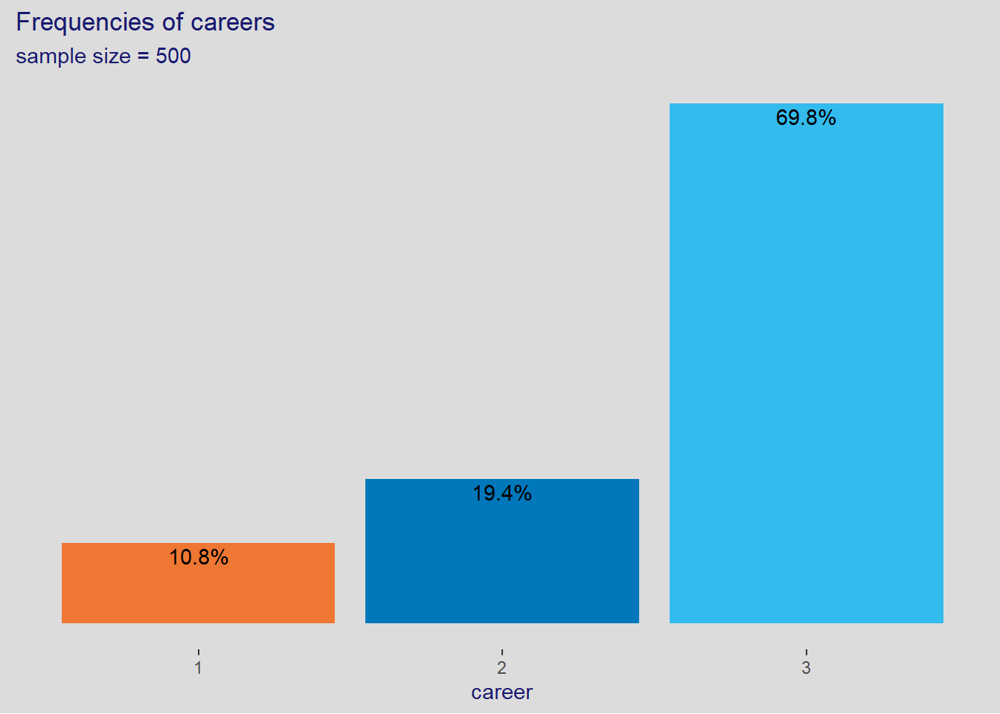
11.3.1.1 Scores
Scores can be thought of as weights.
Their exact values are not much important as their difference from one another.
For example if you add a constant to the scores from above, you get the same softmax
score_new <- simCareer$score + 11 # 11 is an arbitrary constant added to the scores
# compute the new softmax
exp(score_new) / sum(exp(score_new))[1] 0.09962365 0.16425163 0.73612472# which gives the same result and shows that the difference between
# the scores is what matters
rethinking::softmax(score_new)[1] 0.09962365 0.16425163 0.7361247211.3.1.2 Model of predictors matched to outcomes
\[ \begin{align*} \overrightarrow{career} &\sim \mathcal{multinomial(career_1, career_2, career_3)} = \binom{n}{career_1, career_2, career_3} \prod_{i=1}^{3} p_i^{career_i}\\ p_1 &= \frac{\exp{(score_1)}}{\sum_1^3\exp{(score_i)}} \\ p_2 &= \frac{\exp{(score_2)}}{\sum_1^3\exp{(score_i)}} \\ p_3 &= \frac{\exp{(score_3)}}{\sum_1^3\exp{(score_i)}} \\ score_1 &= \alpha_1 + \beta \cdot income_1 \\ score_2 &= \alpha_2 + \beta \cdot income_2 \\ score_3 &= \alpha_3 + \beta \cdot income_3 \\ \alpha_1 &\sim \mathcal{N}(0, 1) \\ \alpha_2 &\sim \mathcal{N}(0, 1) \\ \alpha_3 &\sim \mathcal{N}(0, 1) \\ \beta &\sim \mathcal{N}(0, 0.5) \\ \end{align*} \]
11.3.1.3 Fit with stan
We fit with stan using the same code as mcElreath to demonstrate his results are different
# define the model
fit11_13_code <- "
data{
int N; // number of individuals
int K; // number of possible careers
int career[N]; // outcome
vector[K] career_income;
}
parameters{
vector[K - 1] a; // intercepts
real<lower=0> b; // association of income with choice
}
model{
vector[K] p;
vector[K] s;
a ~ normal(0, 1);
b ~ normal(0, 0.5);
s[1] = a[1] + b * career_income[1];
s[2] = a[2] + b * career_income[2];
s[3] = 0; // pivot
p = softmax(s);
career ~ categorical(p);
}
"
# create data list for Stan
dat_list <-
list(N = nrow(simCareer$data),
K = length(unique(simCareer$data$career)),
career = simCareer$data$career,
career_income = simCareer$income)
tictoc::tic(msg = sprintf("run time of %s, use the cache.", "60 secs."))
fit11_13 <- xfun::cache_rds({
rstan::stan(data = dat_list, model_code = fit11_13_code,
iter = 2000, warmup = 1000, chains = 4,
cores = detectCores(), seed = 1193)},
file = "ch11_fit11_13")
tictoc::toc()run time of 60 secs., use the cache.: 0.31 sec elapsedand we look at the summary
as_draws_df(fit11_13) |>
summarize_draws() |>
mutate(across(.cols = where(is.numeric), .fns = function(x) round(x, digits = 2)))# A tibble: 4 × 10
variable mean median sd mad q5 q95 rhat ess_bulk ess_tail
<chr> <num> <num> <num> <num> <num> <num> <num> <num> <num>
1 a[1] -2.23 -2.22 0.19 0.19 -2.55 -1.94 1.01 629. 547.
2 a[2] -1.67 -1.63 0.25 0.24 -2.13 -1.33 1 568. 437.
3 b 0.13 0.1 0.11 0.1 0.01 0.35 1 539 548.
4 lp__ -377. -376. 1.31 1.07 -379. -375. 1 1156. 1339.and check the summary using rethinking::precis. The result from mcElreath are significantly different than what Kurtz (and the above) give.
Note: although Kurtz results seem to work, they have a high Rhat, just like McElreath and warnings about divergent points after warmup are issued. The effective sizes for Kurtz is much lower than the ones from McElreath.
Be aware that the estimates you get from these models are extraordinarily difficult to interpret. Since the parameters are relative to the pivot outcome value, they could end up positive or negative, depending upon the context. McElreath (2020) p. 361.
11.3.1.4 Null Model (Intercept-only)
As usual we start we the model with only the intercept.
In the case of multinomial, since every category is a model in itself, we use an intercept per category.
The 3rd category is the pivot and identified as such in the brm() function below. The default of brm() is to take the first category as the pivot.
tictoc::tic(msg = sprintf("run time of %s, use the cache.", "100 secs."))
fit11_13null <- xfun::cache_rds({
out <- brm(data = simCareer$data,
family = categorical(link = logit, refcat = 3),
career ~ 1,
prior = c(prior(normal(0, 1), class = Intercept, dpar = mu1),
prior(normal(0, 1), class = Intercept, dpar = mu2)),
iter = 2000, warmup = 1000, chains = 4,
cores = detectCores(), seed = 1193)
out <- brms::add_criterion(out, criterion = c("waic", "loo"))},
file = "ch11_fit11_13null")
tictoc::toc()run time of 100 secs., use the cache.: 0.29 sec elapsedposterior_summary(fit11_13null) |>
round(digits = 2) Estimate Est.Error Q2.5 Q97.5
b_mu1_Intercept -2.10 0.16 -2.43 -1.80
b_mu2_Intercept -1.43 0.12 -1.66 -1.19
lprior -5.08 0.39 -5.91 -4.37
lp__ -375.18 1.01 -377.91 -374.19It is important to understand the role of the pivot category. It is simple, the pivot category is used to center the categorical scores.
For example the scores we used so far, when centered with his category, are as follows
tibble::tibble(
incomes = simCareer$income,
scores = simCareer$score,
rescaled_scores = simCareer$score - simCareer$score[3]
)# A tibble: 3 × 3
incomes scores rescaled_scores
<dbl> <dbl> <dbl>
1 1 0.5 -2
2 2 1 -1.5
3 5 2.5 0 And we observe that \(mu1_Intercept\) and \(mu2_Intercept\) in the summary just above are the same as what we just computed which is the intercepts we obtain with the null model. This is an easy check on the null model.
Now lets see what the fitted values for the \(\mu_{cat}\) are. These fitted values correspond to the softmax which is the link function.
epred11_13null <- simCareer$data |>
distinct(career) |>
add_epred_draws(fit11_13null) |>
ungroup() |>
select(.category, .epred) |>
group_by(.category) |>
mean_qi() |>
mutate(across(.cols = where(is.numeric), .fns= ~round(.x, digits = 2)))
epred11_13null# A tibble: 3 × 7
.category .epred .lower .upper .width .point .interval
<fct> <dbl> <dbl> <dbl> <dbl> <chr> <chr>
1 1 0.09 0.07 0.12 0.95 mean qi
2 2 0.18 0.14 0.21 0.95 mean qi
3 3 0.73 0.69 0.77 0.95 mean qi 2 observations
- the mean are about equal to the original softamx values which is expected since we are using the intercept-only model.
and we can see that that the multinomial probability is actually very close to the theoretical softmax
tibble::tibble(
income = simCareer$income,
score = simCareer$score,
prob = exp(simCareer$score) / sum(exp(simCareer$score))) |>
round(digits = 2)# A tibble: 3 × 3
income score prob
<dbl> <dbl> <dbl>
1 1 0.5 0.1
2 2 1 0.16
3 5 2.5 0.74This is an important test to make sure we get our model right before going any further.
11.3.1.5 Full model
*With
brmsnon-linear syntax we can fit the model with one \(\beta\) parameter or allow it to vary. Thelbargument is used to set the lower bound.
We will create 4 models with varying specs as follows
crossing(b = factor(c("b1 & b2", "b"), levels = c("b1 & b2", "b")),
lb = factor(c("NA", 0), levels = c("NA", 0))) |>
mutate(fit = paste0("b11.13", letters[1:n()])) |>
relocate(fit)# A tibble: 4 × 3
fit b lb
<chr> <fct> <fct>
1 b11.13a b1 & b2 NA
2 b11.13b b1 & b2 0
3 b11.13c b NA
4 b11.13d b 0 and so the model fits using different priors
tictoc::tic(msg = sprintf("run time of %s, use the cache.", "100 secs."))
fit11_13a <- xfun::cache_rds({
out <- brm(data = simCareer$data,
family = categorical(link = logit, refcat = 3),
bf(career ~ 1,
nlf(mu1 ~ a1 + b1 * 1),
nlf(mu2 ~ a2 + b2 * 2),
a1 + a2 + b1 + b2 ~ 1),
prior = c(prior(normal(0, 1), class = b, nlpar = a1),
prior(normal(0, 1), class = b, nlpar = a2),
prior(normal(0, 0.5), class = b, nlpar = b1),
prior(normal(0, 0.5), class = b, nlpar = b2)),
iter = 2000, warmup = 1000, chains = 4,
cores = detectCores(), seed = 1193)
out <- brms::add_criterion(out, criterion = c("waic", "loo"))},
file = "ch11_fit11_13a")
tictoc::toc()run time of 100 secs., use the cache.: 0.33 sec elapsedtictoc::tic(msg = sprintf("run time of %s, use the cache.", "130 secs."))
fit11_13b <- xfun::cache_rds({
out <- brm(data = simCareer$data,
family = categorical(link = logit, refcat = 3),
bf(career ~ 1,
nlf(mu1 ~ a1 + b1 * 1),
nlf(mu2 ~ a2 + b2 * 2),
a1 + a2 + b1 + b2 ~ 1),
prior = c(prior(normal(0, 1), class = b, nlpar = a1),
prior(normal(0, 1), class = b, nlpar = a2),
prior(normal(0, 0.5), class = b, nlpar = b1, lb = 0),
prior(normal(0, 0.5), class = b, nlpar = b2, lb = 0)),
iter = 2000, warmup = 1000, chains = 4,
cores = detectCores(), seed = 1193,
control = list(adapt_delta = .99))
out <- brms::add_criterion(out, criterion = c("waic", "loo"))},
file = "ch11_fit11_13b")
tictoc::toc()run time of 130 secs., use the cache.: 0.31 sec elapsedtictoc::tic(msg = sprintf("run time of %s, use the cache.", "120 secs."))
fit11_13c <- xfun::cache_rds({
out <- brm(data = simCareer$data,
family = categorical(link = logit, refcat = 3),
bf(career ~ 1,
nlf(mu1 ~ a1 + b * 1),
nlf(mu2 ~ a2 + b * 2),
a1 + a2 + b ~ 1),
prior = c(prior(normal(0, 1), class = b, nlpar = a1),
prior(normal(0, 1), class = b, nlpar = a2),
prior(normal(0, 0.5), class = b, nlpar = b, lb = 0)),
iter = 2000, warmup = 1000, chains = 4,
cores = detectCores(), seed = 1193,
control = list(adapt_delta = .99))
out <- brms::add_criterion(out, criterion = c("waic", "loo"))},
file = "ch11_fit11_13c")
tictoc::toc()run time of 120 secs., use the cache.: 1.19 sec elapsedtictoc::tic(msg = sprintf("run time of %s, use the cache.", "120 secs."))
fit11_13d <- xfun::cache_rds({
out <- brm(data = simCareer$data,
family = categorical(link = logit, refcat = 3),
bf(career ~ 1,
nlf(mu1 ~ a1 + b * 1),
nlf(mu2 ~ a2 + b * 2),
a1 + a2 + b ~ 1),
prior = c(prior(normal(0, 1), class = b, nlpar = a1),
prior(normal(0, 1), class = b, nlpar = a2),
prior(normal(0, 0.5), class = b, nlpar = b, lb = 0)),
iter = 2000, warmup = 1000, chains = 4,
cores = detectCores(), seed = 1193,
control = list(adapt_delta = .99))
out <- brms::add_criterion(out, criterion = c("waic", "loo"))},
file = "ch11_fit11_13d")
tictoc::toc()run time of 120 secs., use the cache.: 0.36 sec elapsedand plot the results
summ11_13 <- list()
summ11_13 <- within(summ11_13, {
# get the models
nms <- paste0("fit11_13", letters[1:4])
models <- lapply(X = nms, FUN = \(x)(get(x)))
names(models) <- nms
# get the coefficient directly from the summary
data <- purrr::map_dfr(.x = models, .f = function(m) {
fixef(m) |>
as.data.frame() |>
tibble::rownames_to_column(var = "term") |>
mutate(term = sub(pattern = "_Intercept", replacement = "", x = term))
}, .id = "model")
})
# lpred11_13$models
# summ11_13$dataggplot(summ11_13$data, aes(x = Estimate, xmin = Q2.5, xmax = Q97.5,
y = model, color = term)) +
geom_vline(xintercept = 0, size = 0.5, color = "brown", linetype = "dotted") +
geom_pointinterval(size = 3, fatten_point = 3) +
ggrepel::geom_text_repel(
mapping = aes(x = Estimate, y = model, label = round(Estimate, 2)),
size = 3) +
scale_color_paletteer_d("khroma::bright") +
theme(legend.position = "none") +
labs(title = "The parameters' value by model", x = NULL, y = NULL) +
facet_wrap(.~ term, nrow = 1)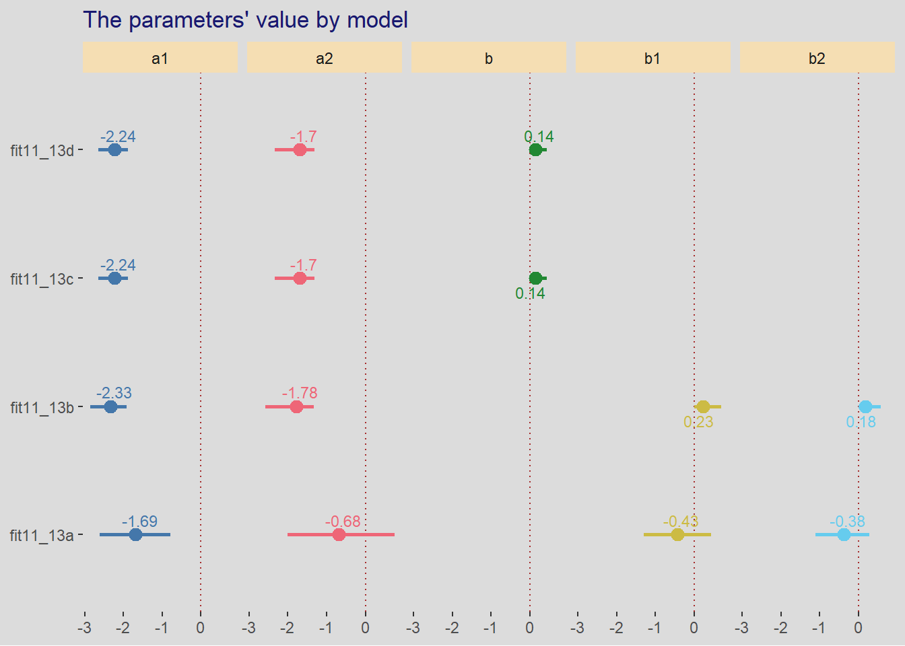
and comparing the performance of the models
loo_compare(fit11_13null, fit11_13a, fit11_13b, fit11_13c, fit11_13d,
criterion = "loo") |>
print(simplify = FALSE) elpd_diff se_diff elpd_loo se_elpd_loo p_loo se_p_loo looic
fit11_13c 0.0 0.0 -371.0 16.6 1.8 0.1 742.0
fit11_13d 0.0 0.0 -371.0 16.6 1.8 0.1 742.0
fit11_13a -0.1 0.2 -371.0 16.8 1.9 0.1 742.1
fit11_13b -0.1 0.0 -371.1 16.6 1.9 0.1 742.1
fit11_13null -0.1 0.0 -371.1 16.7 1.9 0.1 742.2
se_looic
fit11_13c 33.3
fit11_13d 33.3
fit11_13a 33.6
fit11_13b 33.3
fit11_13null 33.3 The results are similar to what Kurtz found, this is caused by the facts that the models have very similar performance and therefore it doesn’t take much to change the ranking. Most numbers, e.g. looic are similar.
and the model weights
model_weights(fit11_13null, fit11_13a, fit11_13b, fit11_13c, fit11_13d,
weights = "loo") |>
round(digits = 2)fit11_13null fit11_13a fit11_13b fit11_13c fit11_13d
0.19 0.20 0.19 0.21 0.21 11.3.2 Predictors matched to observations
# generate probabilities from family income
genProbs <- function(x, coef = c(-2, 0, 2), career = 1:3, income_coef = 0.5) {
stopifnot(x >= 0, x <= 1)
sapply(x, FUN = function(x) {
score <- income_coef * career + coef * x
probs <- rethinking::softmax(score)
sample(career, size = 1, prob = probs)
})
}sim <- list()
sim <- within(sim, {
set.seed(1193)
data <- specify(
family_income = ~ runif(n = 1, min = 0, max = 1),
career = ~ genProbs(family_income)) |>
generate(100) |>
unnest(sim) |>
mutate(fcareer = paste("career", career))
})
dataCareer <- sim$dataand we plot the distribution of the family income which is used as a predictor for each category
p <- list()
p$dens <- ggplot(dataCareer, aes(x = family_income, color = fcareer)) +
geom_density(size = 1.5) +
scale_color_paletteer_d("khroma::vibrant") +
theme(legend.position = c(0.8, 0.8),
legend.title = element_blank(),
axis.ticks.y = element_blank(),
axis.text.y = element_blank()) +
labs(title = "observed densities of familiy income by career",
subtitle = sprintf("sample size = %d", nrow(sim$data)),
x = "family income", y = NULL)
p$dens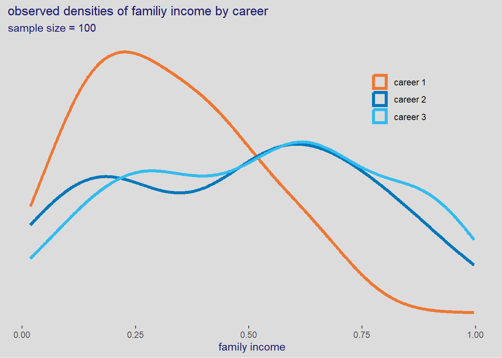
Now lets fit the model with brms
tictoc::tic(msg = sprintf("run time of %s, use the cache.", "90 secs."))
fit11_14 <- xfun::cache_rds({
out <- brm(data = dataCareer,
family = categorical(link = logit, refcat = 3),
bf(career ~ 1,
nlf(mu1 ~ a1 + b1 * family_income),
nlf(mu2 ~ a2 + b2 * family_income),
a1 + a2 + b1 + b2 ~ 1),
prior = c(prior(normal(0, 1.5), class = b, nlpar = a1),
prior(normal(0, 1.5), class = b, nlpar = a2),
prior(normal(0, 1), class = b, nlpar = b1),
prior(normal(0, 1), class = b, nlpar = b2)),
iter = 2000, warmup = 1000, chains = 4,
cores = detectCores(), seed = 1193)
out <- brms::add_criterion(out, criterion = "loo")},
file = "ch11_fit11_14")
tictoc::toc()run time of 90 secs., use the cache.: 0.37 sec elapsedsummary(fit11_14) Family: categorical
Links: mu1 = logit; mu2 = logit
Formula: career ~ 1
mu1 ~ a1 + b1 * family_income
mu2 ~ a2 + b2 * family_income
a1 ~ 1
a2 ~ 1
b1 ~ 1
b2 ~ 1
Data: dataCareer (Number of observations: 500)
Draws: 4 chains, each with iter = 2000; warmup = 1000; thin = 1;
total post-warmup draws = 4000
Population-Level Effects:
Estimate Est.Error l-95% CI u-95% CI Rhat Bulk_ESS Tail_ESS
a1_Intercept -1.29 0.26 -1.80 -0.79 1.00 2230 2277
a2_Intercept -1.01 0.21 -1.41 -0.59 1.00 2315 2392
b1_Intercept -2.49 0.57 -3.66 -1.43 1.00 2168 2231
b2_Intercept -1.22 0.40 -2.00 -0.43 1.00 2228 2562
Draws were sampled using sampling(NUTS). For each parameter, Bulk_ESS
and Tail_ESS are effective sample size measures, and Rhat is the potential
scale reduction factor on split chains (at convergence, Rhat = 1).and lets see PSIS
loo(fit11_14)
Computed from 4000 by 500 log-likelihood matrix
Estimate SE
elpd_loo -330.3 16.9
p_loo 3.2 0.3
looic 660.6 33.9
------
Monte Carlo SE of elpd_loo is 0.0.
All Pareto k estimates are good (k < 0.5).
See help('pareto-k-diagnostic') for details.post11_14 <- data.frame(
family_income = seq_range(dataCareer$family_income, n = 50, pretty = TRUE)) |>
add_epred_draws(fit11_14) |>
mean_qi() |>
identity()
# post11_14plot11_14 <- list()
plot11_14 <- within(plot11_14, {
df <- dataCareer |>
mutate(family_income = plyr::round_any(family_income, 0.25)) |>
count(career, family_income) |>
mutate(probs = n / sum(n))
p <- ggplot(post11_14, aes(x = family_income, y = .epred, ymin = .lower, ymax = .upper,
color = .category, fill = .category)) +
geom_point(df, mapping = aes(x = family_income, y = probs, color = as.factor(career), fill = as.factor(career)),
inherit.aes = FALSE) +
geom_smooth(stat = "identity") +
scale_color_paletteer_d("khroma::vibrant") +
scale_fill_paletteer_d("khroma::vibrant") +
theme(legend.position = "bottom") +
labs(title = "probabilities of career relative to family income",
y = "probabilities", color = "career", fill = "career")
})
plot11_14$p11.3.3 Multinomial in disguise as Poisson
data(UCBadmit)
dataAdmit <- UCBadmit |>
rename(rejct = reject) # reject is a reserved word in brms
rm(UCBadmit)
dataAdmit |>
skim() |>
select(-n_missing, -complete_rate) |>
mutate(across(.cols = where(is.numeric), .fns = round, digits = 1))| Name | dataAdmit |
| Number of rows | 12 |
| Number of columns | 5 |
| _______________________ | |
| Column type frequency: | |
| factor | 2 |
| numeric | 3 |
| ________________________ | |
| Group variables | None |
Variable type: factor
| skim_variable | ordered | n_unique | top_counts |
|---|---|---|---|
| dept | FALSE | 6 | A: 2, B: 2, C: 2, D: 2 |
| applicant.gender | FALSE | 2 | fem: 6, mal: 6 |
Variable type: numeric
| skim_variable | mean | sd | p0 | p25 | p50 | p75 | p100 | hist |
|---|---|---|---|---|---|---|---|---|
| admit | 146.2 | 148.4 | 17 | 45.8 | 107.0 | 154.0 | 512 | ▇▅▁▁▁ |
| rejct | 230.9 | 122.8 | 8 | 188.2 | 261.5 | 314.0 | 391 | ▃▂▃▇▆ |
| applications | 377.2 | 216.9 | 25 | 291.5 | 374.0 | 452.8 | 825 | ▃▆▇▃▂ |
tictoc::tic(msg = sprintf("run time of %s, use the cache.", "70 secs."))
fit11_15binom <- xfun::cache_rds({
out <- brm(data = dataAdmit,
family = binomial,
formula = admit | trials(applications) ~ 1,
prior = c(prior(normal(0, 1.5), class = Intercept)),
iter = 2000, warmup = 1000, chains = 4,
cores = detectCores(), seed = 1193)
out <- brms::add_criterion(out, criterion = "loo")},
file = "ch11_fit11_15binom")
tictoc::toc()run time of 70 secs., use the cache.: 0.14 sec elapsedtictoc::tic(msg = sprintf("run time of %s, use the cache.", "60 secs."))
fit11_15pois <- xfun::cache_rds({
out <- brm(data = dataAdmit,
family = poisson,
formula = mvbind(admit, rejct) ~ 1,
prior = c(prior(normal(0, 1.5), class = Intercept)),
iter = 2000, warmup = 1000, chains = 4,
cores = detectCores(), seed = 1193)
out <- brms::add_criterion(out, criterion = "loo")},
file = "ch11_fit11_15pois")
tictoc::toc()run time of 60 secs., use the cache.: 0.14 sec elapsedand the posterior distribution for the Poisson fit
gather_rvars(fit11_15pois, b_admit_Intercept, b_rejct_Intercept)# A tibble: 2 × 2
.variable .value
<chr> <rvar[1d]>
1 b_admit_Intercept 5.0 ± 0.025
2 b_rejct_Intercept 5.4 ± 0.019gather_rvars(fit11_15pois, b_admit_Intercept, b_rejct_Intercept) |>
mutate(.value = exp(.value),
.variable = sub(pattern = "_Intercept", replacement = "", x = .variable),
.variable = sub(pattern = "b_", replacement = "", x = .variable)) |>
ggplot(aes(xdist = .value, y = .variable, fill = .variable)) +
stat_halfeye(point_interval = median_qi, .width = 0.95) +
theme(legend.position = "none") +
labs(title = "Distribution of rate of admission and reject across departments",
x = "nb of applicaitons", y = NULL)